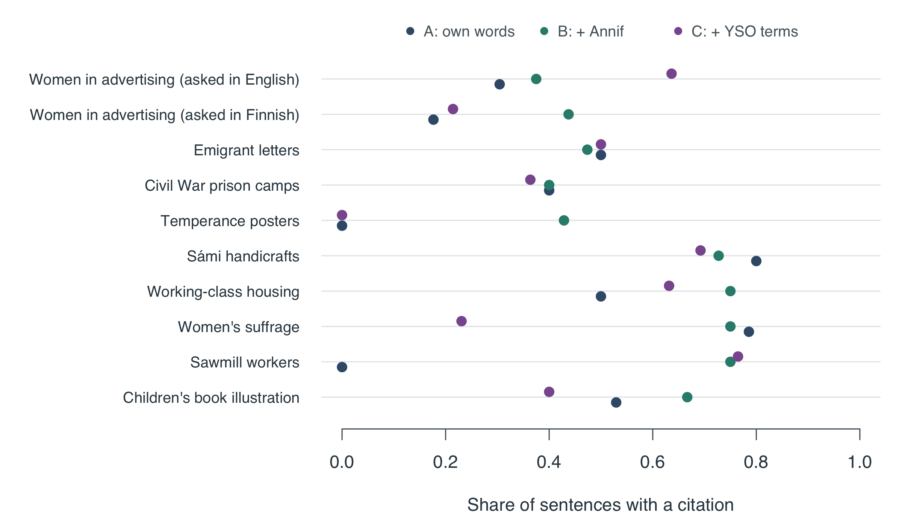

| Search | Answers | Sentences | With a citation | Citations to records not given | Sentences without citation | Sentences about change | … of which cited |
|---|---|---|---|---|---|---|---|
| A: own words | 10 | 157 | 40% | 0 | 87 | 9 | 67% |
| B: + Annif | 10 | 152 | 56% | 0 | 63 | 8 | 50% |
| C: + YSO terms | 10 | 152 | 47% | 0 | 78 | 8 | 62% |
7 What the AI wrote, and can we trust it?
How often the AI cites its sources, where those sources came from, and what still needs a human eye
In short. The AI wrote 30 answers, 461 sentences in all. 48% of the sentences cite at least one record. None of its citations named a record the AI had not been given: when it cites, it cites real evidence, and it is open about the limits of what it saw. A citation is not proof, though. Whether each cited record really supports its sentence can only be judged by people, and that is the next step.
Left out of the averages: Karelian evacuees and Swedish-language theatre, which found no records in any search; Amateur radio clubs (its only records came from a wrong thesaurus match, clubs taken as music clubs, which heritageRAG 0.3.1 fixes). See Question by question.
WarningCheckers: please stop here
This page shows which search produced each sentence. If you are judging sentences for the study, please come back after you have finished.
What the AI was asked to do
For each search, the AI received the top 8 records and the research question, and these rules:
- use only the records given; do not invent records, dates, people or places;
- keep what the records show separate from your interpretation;
- say when the evidence is too thin, and do not claim a trend from a few records;
- end every sentence about the records with the numbers of the records that support it.
How well does it cite?
What the columns mean:
- With a citation: the sentence names at least one record.
- Citations to records not given: the AI named a record number it never received, which means it made it up. This should be zero.
- Sentences without citation: sentences with no record number that are not simply remarks about the evidence (such as “the sample is small”). These deserve a closer look: they may be unsupported interpretation.
- Sentences about change: sentences with words like shift, increase or became. Claims about change over time are the riskiest, so we check whether they are backed by records.

How to read this: each row is a question, each dot the AI answer for one search. Further right means more of its sentences cite records.
Where did the cited records come from?
| Search | Records cited | Found only through new words | Not found by search A |
|---|---|---|---|
| A: own words | 174 | 0% | 0% |
| B: + Annif | 208 | 13% | 38% |
| C: + YSO terms | 195 | 28% | 42% |
What it means. The answers for search C lean heavily on records that our own words would never have shown: 42% of the records it cites were not found by search A, and 28% were found only through words added by Annif or the thesaurus. So the search step does not just change the list of records. It changes the story the AI tells, because the story is built from different evidence.
An example
The first lines of the answer for Women in advertising (asked in English), search A:
Observations:
A 1921 advertising record is catalogued as a political advertisement linked to a women’s organisation titled “Me odotamme sinua” (Social Democratic Women’s Union). [werstas.we-1372484].
A 1950 poster record is catalogued with subjects that include women’s rights movements and the cooperative system. [ta_ah.ta-1369756].
A 1955 Asko advertising photograph record is catalogued with subjects that include women and newspaper advertising as well as domestic goods (coffee cups, curtains, carpets, sofas). [lahdenmuseo.lkm-461598].
The AI separates what the catalogue records say (“catalogued with subjects including …”) from its own interpretation, and it repeatedly warns that metadata is not the same as the image or text itself. That is the behaviour we asked for. It does not make the interpretations correct.
What we cannot tell yet
- whether each cited record really supports its sentence;
- whether the interpretations (for example “a shift from political to commercial contexts”) hold up;
- whether answers built on search C are better or worse than those built on search A.
These are exactly the questions the two checkers answer on their sheets. See Human checking.
Read all the answers
NoteWomen in advertising (asked in English)
Search A: your own words
Observations:
A 1921 advertising record is catalogued as a political advertisement linked to a women’s organisation titled “Me odotamme sinua” (Social Democratic Women’s Union). [werstas.we-1372484].
A 1950 poster record is catalogued with subjects that include women’s rights movements and the cooperative system. [ta_ah.ta-1369756].
A 1955 Asko advertising photograph record is catalogued with subjects that include women and newspaper advertising as well as domestic goods (coffee cups, curtains, carpets, sofas). [lahdenmuseo.lkm-461598].
Three 1956 product-ad records from OTK’s shirt factory are catalogued with subjects including women, shirts, mannequins (occupations), and advertising photographs. [werstas.we-1613705, werstas.we-1613706, werstas.we-1613707].
Two 1960 catalogue records from textile/wool manufacturers are catalogued with subjects that include women, advertising, marketing, and clothing items such as trousers and blankets; one of these records’ title references the year 1931 while its recorded year is 1960. [hyvinkaa_mui.mui-25099, hyvinkaa_mui.mui-25159].
Interpretation (separate from the direct observations above):
The metadata in the retrieved records suggests that advertising involving women appears in both explicitly political/organisational contexts (1921) and in consumer, home, and clothing contexts in the 1950s–1960s. [werstas.we-1372484; ta_ah.ta-1369756; lahdenmuseo.lkm-461598; werstas.we-1613705, werstas.we-1613706, werstas.we-1613707; hyvinkaa_mui.mui-25099, hyvinkaa_mui.mui-25159].
The 1950 record’s subjects indicate that references to women’s rights and cooperatives persisted into mid-century advertising metadata as well as the later consumer-oriented records. [ta_ah.ta-1369756; lahdenmuseo.lkm-461598; werstas.we-1613705, werstas.we-1613706, werstas.we-1613707; hyvinkaa_mui.mui-25099].
Limitations and caution:
The available evidence set is small and unevenly distributed across the four decades covered, so it is insufficient to support a general or definitive claim about broad changes in representations of women in Finnish advertising between 1920 and 1960. [werstas.we-1372484; ta_ah.ta-1369756; lahdenmuseo.lkm-461598; werstas.we-1613705, werstas.we-1613706, werstas.we-1613707; hyvinkaa_mui.mui-25099, hyvinkaa_mui.mui-25159].
I have relied only on the supplied catalogue metadata; I have not assumed or described the visual or textual content beyond those metadata fields. [werstas.we-1372484; ta_ah.ta-1369756; lahdenmuseo.lkm-461598; werstas.we-1613705, werstas.we-1613706, werstas.we-1613707; hyvinkaa_mui.mui-25099, hyvinkaa_mui.mui-25159].
Recommendation:
- To assess change over time with confidence, consult a larger sample of primary advertising images and their full catalog or item records (visual content and full descriptions) from each decade.
Search B: your words + the indexer’s suggestions
Direct observations (based only on the provided catalogue metadata):
The 1921 record is titled “Mainos; ‘Me odotamme sinua’, Sosialidemokraattinen Työläisnaisliitto” and its subjects list advertisements, women’s organisations and political advertising [werstas.we-1372484].
A 1950 poster record is catalogued as “Juliste; KK:n juliste 1950:195” with subjects including women’s rights movements, the cooperative system and advertising [ta_ah.ta-1369756].
A record titled “Yhdistyneet Villatehtaat. Mainoskuva naisten arkiasusta vuodelta 1931.” is present with a year field of 1960 and subjects listing women, advertising and trousers [hyvinkaa_mui.mui-25159].
A 1960 record “Villayhtymä Oy. Mainoskuva matkahuovasta.” has subjects including wool industry, textile industry, women, marketing and advertising photographs [hyvinkaa_mui.mui-25099].
A 1955 record “Askon mainoskuva vuodelta 1955” lists subjects such as coffee cups, curtains, carpets and rugs, women, newspaper advertising, furniture and coffee culture [lahdenmuseo.lkm-461598].
Three 1956 records titled “OTK:n paitatehtaan tuotemainos” list subjects including advertisements, advertising photographs, mannequins (occupations), women and shirts, and give a Helsinki address (Käenkuja 4) [werstas.we-1613705, werstas.we-1613706, werstas.we-1613707].
Interpretation (separated from the above observations and based only on the cited metadata):
The 1921 record’s metadata indicates a political advertisement connected to a women’s organisation, which contrasts with mid-20th-century records whose metadata emphasizes commercial products, textiles and domestic goods (examples: the 1955 Askon ad, the 1956 OTK shirt ads, and the 1960 textile/wool ads) [werstas.we-1372484, lahdenmuseo.lkm-461598, werstas.we-1613705, werstas.we-1613706, werstas.we-1613707, hyvinkaa_mui.mui-25099].
The 1950 poster’s subjects (women’s rights movements; cooperative system; advertising) may indicate that gender and collective economic themes appear in advertising metadata at mid-century as well [ta_ah.ta-1369756].
Limitations and caution (must be read alongside the items above):
These statements are based only on catalogue metadata (titles, subjects, year fields) and do not confirm the actual visual or textual content of the items; the metadata should not be assumed to fully describe what appears in each image or poster [werstas.we-1372484, ta_ah.ta-1369756, hyvinkaa_mui.mui-25159, hyvinkaa_mui.mui-25099, lahdenmuseo.lkm-461598, werstas.we-1613705, werstas.we-1613706, werstas.we-1613707].
The sample is small and selective; it is therefore insufficient to demonstrate a comprehensive or systematic change in representations of women across Finnish advertising between 1920 and 1960 [werstas.we-1372484, ta_ah.ta-1369756, hyvinkaa_mui.mui-25159, hyvinkaa_mui.mui-25099, lahdenmuseo.lkm-461598, werstas.we-1613705, werstas.we-1613706, werstas.we-1613707].
If you would like, I can (a) list which records would be most useful to view to verify visual content, or (b) suggest search terms to retrieve more advertising items from 1920–1960 to support a broader analysis.
Search C: B + official thesaurus terms in Finnish, Swedish and English
Direct observations:
A record titled “Yhdistyneet Villatehtaat. Mainoskuva naisten arkiasusta vuodelta 1931.” is present with the listed year 1960 and subjects including women, advertising, and trousers. [hyvinkaa_mui.mui-25159]
A poster record “Juliste; KK:n juliste 1957:36” is present with the listed year 1957 and subjects including women, cooperative system, advertising, beauty care, and hygiene. [ta_ah.ta-1309443]
Multiple Villayhtymä Oy records titled “Mainoskuva naisten leningistä.” are present with listed years 1959–1960 and subjects including textile industry, women, marketing, mannequins (occupations), and advertising. [hyvinkaa_mui.mui-27917; hyvinkaa_mui.mui-27808; hyvinkaa_mui.mui-27918; hyvinkaa_mui.mui-27977; hyvinkaa_mui.mui-27994; hyvinkaa_mui.mui-27969]
One Villayhtymä record notes text on the reverse reading “Tuliunikko- villan.” [hyvinkaa_mui.mui-27969]
Interpretation and limitations:
The available records’ metadata indicate advertising items related to women’s clothing (dresses/leninki), trousers, and beauty/hygiene from the late 1950s and 1957, and a record whose title references 1931 catalogued in 1960, but the set is small and concentrated in the 1957–1960 period, so this sample is not sufficient to document changes across the full 1920–1960 period. [hyvinkaa_mui.mui-27917; hyvinkaa_mui.mui-27808; hyvinkaa_mui.mui-27918; hyvinkaa_mui.mui-27977; hyvinkaa_mui.mui-27994; hyvinkaa_mui.mui-27969; ta_ah.ta-1309443; hyvinkaa_mui.mui-25159]
Because I must not assume catalogue metadata equals visual/textual content, I cannot describe how women were visually represented (poses, expressions, roles) from these records alone; the metadata only indicates topics and formats. [hyvinkaa_mui.mui-27917; ta_ah.ta-1309443; hyvinkaa_mui.mui-25159]
Therefore, while the records suggest commercial advertising attention to women’s clothing and to beauty/hygiene in the late 1950s, the evidence is too limited to establish how representations of women changed across four decades (1920–1960) or to assert any broader trend. [hyvinkaa_mui.mui-27917; hyvinkaa_mui.mui-27918; hyvinkaa_mui.mui-27977; hyvinkaa_mui.mui-27994; hyvinkaa_mui.mui-27969; ta_ah.ta-1309443; hyvinkaa_mui.mui-25159]
If you would like, I can: (a) request or search for additional records from earlier decades to compare, or (b) examine the images/text of any of these specific records to extract more detail (if access to the item images or full catalogue entries is available).
NoteWomen in advertising (asked in Finnish)
Search A: your own words
Tiivistelmä käytettävissä olevasta aineistosta: käytettävissä oleva Finna-kataloginäytteistö sisältää merkintöjä vuosilta 1930, 1950, 1955 ja 1958; nämä merkinnät ovat seuraavat tietueet: hkm.DCEBE6FC-A3D9-48C4-9BC5-06976202ECA2, hkm.26951127-913F-4D33-A100-68DEB634184A, hkm.9CA32185-6340-4B2E-9CD7-A3EF270BEC07, hkm.C24B377B-6054-4033-BE43-2165128E684B, hkm.E44F0E6E-A905-42DD-BC4E-DA3013B6B716, hkm.57DF3D6C-088C-4C27-81AC-56905B3D097C, hkm.C74DE4AD-E47C-411C-94A8-D619D28C986E ja ta_ah.ta-1380177. [hkm.DCEBE6FC-A3D9-48C4-9BC5-06976202ECA2, hkm.26951127-913F-4D33-A100-68DEB634184A, hkm.9CA32185-6340-4B2E-9CD7-A3EF270BEC07, hkm.C24B377B-6054-4033-BE43-2165128E684B, hkm.E44F0E6E-A905-42DD-BC4E-DA3013B6B716, hkm.57DF3D6C-088C-4C27-81AC-56905B3D097C, hkm.C74DE4AD-E47C-411C-94A8-D619D28C986E, ta_ah.ta-1380177]
Havaintoja (suoria katalogitiedoista):
Katalogimerkintä, joka on merkitty “mainos, elokuvamainos, etiketti” ja koskee elokuvaa Niskavuoren naiset vuodelta 1930, on mukana aineistossa. [hkm.DCEBE6FC-A3D9-48C4-9BC5-06976202ECA2]
Useat merkinnät liittyvät Osuusliike Elannon “NM eli Naiset mukaan” -toimintaan ja messu-/näyttelyosuuksiin 1950-luvulla, mukaan lukien mannekniinin esittely muotiin, nainen katselee muotia, näyttelyosastojen esittelyt sekä organisaation juhlien osastot. [hkm.C24B377B-6054-4033-BE43-2165128E684B, hkm.E44F0E6E-A905-42DD-BC4E-DA3013B6B716, hkm.57DF3D6C-088C-4C27-81AC-56905B3D097C, hkm.9CA32185-6340-4B2E-9CD7-A3EF270BEC07, hkm.C74DE4AD-E47C-411C-94A8-D619D28C986E]
Yksi merkintä kuvailee tilannetta, jossa “neljä naista maistelee jotakin” Naiset Mukaan -toimintaan liittyvässä tapahtumassa Savonlinnassa vuonna 1958. [ta_ah.ta-1380177]
Vuodelta 1950 on katalogimerkintä, joka mainostaa Vaunuteos Oy:n muunneltavia lastenvaunuja ja jossa metadataan on liitetty sanat “nainen”, “mainonta”, “lastenvaunut” ja vaate- ja jalkineaiheita. [hkm.26951127-913F-4D33-A100-68DEB634184A]
Katalogitiedoissa toistuvia aiheita ovat mainonta, vaatteet/muoti, näyttelyt/messut, naiset ja kulutustuotteet. [hkm.DCEBE6FC-A3D9-48C4-9BC5-06976202ECA2, hkm.26951127-913F-4D33-A100-68DEB634184A, hkm.9CA32185-6340-4B2E-9CD7-A3EF270BEC07, hkm.C24B377B-6054-4033-BE43-2165128E684B, hkm.E44F0E6E-A905-42DD-BC4E-DA3013B6B716, hkm.C74DE4AD-E47C-411C-94A8-D619D28C986E, ta_ah.ta-1380177]
Tulkintoja (erotettuna havainnoista, varauksin):
Katalogitiedot viittaavat siihen, että näissä hakutuloksissa naisia esiintyy mainos- ja messukonteksteissa erityisesti muodin, kotitaloustuotteiden (esim. lastenvaunut, maistatustilaisuudet) ja osuustoiminnallisten näyttelyjen yhteydessä, mutta tämä perustuu ainoastaan saatuihin katalogimerkintöihin eikä kuvien tai mainostekstien analyysiin. [hkm.C24B377B-6054-4033-BE43-2165128E684B, hkm.E44F0E6E-A905-42DD-BC4E-DA3013B6B716, hkm.26951127-913F-4D33-A100-68DEB634184A, ta_ah.ta-1380177, hkm.9CA32185-6340-4B2E-9CD7-A3EF270BEC07]
Aineisto on kuitenkin hyvin rajallinen ja kattaa käytännössä vain yksittäisiä vuosikohteita 1930- ja 1950-luvuilta, joten näistä tiedoista ei voi tehdä laajempia tai mittavia johtopäätöksiä siitä, miten naisia yleisesti kuvattiin suomalaisissa mainoksissa vuosina 1920–1960. [hkm.DCEBE6FC-A3D9-48C4-9BC5-06976202ECA2, hkm.26951127-913F-4D33-A100-68DEB634184A, hkm.9CA32185-6340-4B2E-9CD7-A3EF270BEC07, hkm.C24B377B-6054-4033-BE43-2165128E684B, hkm.E44F0E6E-A905-42DD-BC4E-DA3013B6B716, hkm.57DF3D6C-088C-4C27-81AC-56905B3D097C, hkm.C74DE4AD-E47C-411C-94A8-D619D28C986E, ta_ah.ta-1380177]
Rajoitukset ja menetelmähuomautus:
Katalogitiedot eivät yksin kerro varmuudella kuvan visuaalisesta sisällöstä tai mainostekstien vivahteista, eikä katalogimetatietoa tule olettaa vastaavan kuva- tai tekstisisältöä ilman varsinaista kuvien tai mainosten tarkastelua.
Saatu aineisto ei sisällä hakutietoja 1920-luvulta tai laajempaa otantaa 1940-luvulta, joten aikajaksosta 1920–1960 kattava analyysi edellyttää laajempaa aineistonhankintaa.
Ehdotuksia jatkotoimiin:
Hanki alkuperäiskuvat tai lehtileikkeet tiedostoista, joiden katalogimerkinnät on tässä listattu, jotta visuaalinen sisältö ja mainostekstit voidaan analysoida suoraan (kunkin merkinnän tunnisteet mainittu yllä). [hkm.DCEBE6FC-A3D9-48C4-9BC5-06976202ECA2, hkm.26951127-913F-4D33-A100-68DEB634184A, hkm.9CA32185-6340-4B2E-9CD7-A3EF270BEC07, hkm.C24B377B-6054-4033-BE43-2165128E684B, hkm.E44F0E6E-A905-42DD-BC4E-DA3013B6B716, hkm.57DF3D6C-088C-4C27-81AC-56905B3D097C, hkm.C74DE4AD-E47C-411C-94A8-D619D28C986E, ta_ah.ta-1380177]
Laajenna hakua arkistoihin ja sanomalehtien digikokoelmiin kattavamman otoksen saamiseksi vuosilta 1920–1960 ennen yleisten johtopäätösten tekemistä.
Search B: your words + the indexer’s suggestions
Havainnot (suorat metatietohavainnot):
Tietueessa “mainos, elokuvamainos, etiketti; Niskavuoren naiset ohjaus Valentin Vaala” vuodelta 1930 on asiasanoina muun muassa käyttögrafiikka, mainonta ja mainokset; kuvauskenttä on merkitty NA [hkm.DCEBE6FC-A3D9-48C4-9BC5-06976202ECA2].
Tietue “Naisten asema Suomessa v. 1935.” (1935) on luokiteltu aiheilla naisasialiikkeet, naisen asema, naiset ja mainokset [doria.10024_84710].
Tietue “Sophie Adlersparre (Esselde)” (1923) on luokiteltu naisasialiikkeisiin ja mainoksiin [doria.10024_84667].
Tietue “Naiset, rauhan ja vapauden puolesta!” (1938) on luokiteltu rauhanaatteeseen, kansalaistoimintaan ja mainoksiin [doria.10024_84171].
Vuoden 1958 kuvailuissa on aineistoja, joissa mannekiini esittelee naisten muotia messuilla ja nainen katselee uusinta muotia; molempien tietueiden asiasanoina ovat vaatteet, messut, markkinointi ja mainonta [hkm.C24B377B-6054-4033-BE43-2165128E684B] [hkm.E44F0E6E-A905-42DD-BC4E-DA3013B6B716].
Kevätmessut‑tietue vuodelta 1948 on kuvailtu sisältävän messuja, markkinointia, mainoskuvia ja naisia [hkm.DA1B2743-6079-4E95-8A57-A9407A223682].
Vuoden 1945 tietueessa mainokset liittyvät Jehovan todistajan esitelmää mainostavaan kulkueeseen; asiasanana mainokset [hkm.2C19A3BD-C679-4D63-9D59-BCD3A5EF8E8B].
Tulkinnat ja rajaukset (eroteltu suoraan havainnoista):
Metatiedot osoittavat, että näissä haetuissa tietueissa naisiin liittyvät mainosaiheet esiintyvät muun muassa muodin, messujen, naisasialiikkeen ja rauhantyön yhteyksissä [hkm.DCEBE6FC-A3D9-48C4-9BC5-06976202ECA2, doria.10024_84710, doria.10024_84667, doria.10024_84171, hkm.C24B377B-6054-4033-BE43-2165128E684B, hkm.E44F0E6E-A905-42DD-BC4E-DA3013B6B716, hkm.DA1B2743-6079-4E95-8A57-A9407A223682].
Metatiedoissa useissa tietueissa kuvauskenttä on merkitty NA, joten niiden perusteella ei ole riittävää näyttöä siitä, miten naiset visuaalisesti tai tekstuaalisesti esitettiin mainoksissa (sisällön tarkempi kuvailu puuttuu) [hkm.DCEBE6FC-A3D9-48C4-9BC5-06976202ECA2, doria.10024_84710, doria.10024_84667, doria.10024_84171, hkm.C24B377B-6054-4033-BE43-2165128E684B, hkm.E44F0E6E-A905-42DD-BC4E-DA3013B6B716, hkm.DA1B2743-6079-4E95-8A57-A9407A223682, hkm.2C19A3BD-C679-4D63-9D59-BCD3A5EF8E8B].
Koska aineisto on suppea ja metatiedot eivät paljasta visuaalista sisältöä, näiden tietueiden perusteella ei voi turvallisesti yleistää tai todentaa laajempaa trendiä siitä, miten naisia kuvattiin suomalaisissa mainoksissa vuosina 1920–1960 [hkm.DCEBE6FC-A3D9-48C4-9BC5-06976202ECA2, doria.10024_84710, doria.10024_84667, doria.10024_84171, hkm.C24B377B-6054-4033-BE43-2165128E684B, hkm.E44F0E6E-A905-42DD-BC4E-DA3013B6B716, hkm.DA1B2743-6079-4E95-8A57-A9407A223682, hkm.2C19A3BD-C679-4D63-9D59-BCD3A5EF8E8B].
Ehdotukset jatkotutkimukselle:
Tarkista alkuperäiset kuvailusivut ja mahdolliset kuvat tai skannaukset kunkin tietueen Finna‑sivulla (linkit ja tunnukset löytyvät kustakin tietueesta) ennen visuaalisten johtopäätösten tekemistä [hkm.DCEBE6FC-A3D9-48C4-9BC5-06976202ECA2, doria.10024_84710, doria.10024_84667, doria.10024_84171, hkm.C24B377B-6054-4033-BE43-2165128E684B, hkm.E44F0E6E-A905-42DD-BC4E-DA3013B6B716, hkm.DA1B2743-6079-4E95-8A57-A9407A223682, hkm.2C19A3BD-C679-4D63-9D59-BCD3A5EF8E8B].
Laajenna hakua ja kartoita lisää mainos‑, muoti‑ ja lehtiaineistoja 1920–1960‑vuosilta, jotta mahdolliset kuvalliset ja tekstuaaliset kuvastot voidaan analysoida luotettavammin (tässä vastaus perustuu vain yllä lueteltuihin tietueisiin) [hkm.DCEBE6FC-A3D9-48C4-9BC5-06976202ECA2, doria.10024_84710, doria.10024_84667, doria.10024_84171, hkm.C24B377B-6054-4033-BE43-2165128E684B, hkm.E44F0E6E-A905-42DD-BC4E-DA3013B6B716, hkm.DA1B2743-6079-4E95-8A57-A9407A223682, hkm.2C19A3BD-C679-4D63-9D59-BCD3A5EF8E8B].
Search C: B + official thesaurus terms in Finnish, Swedish and English
Vastaan ainoastaan annettuihin tietueisiin perustuen. [ta_ah.ta-1595150, lahdenmuseo.lkm-381533, werstas.we-1372484, werstas.we-1613707, lahdenmuseo.lkm-461598, werstas.we-1613705, werstas.we-1613706, lahdenmuseo.lkm-381387]
Havainnot (vain katalogimerkintöjen tiedot):
Katalogimerkinnöissä esiintyy naisten asema ja naiset asiasanoina useissa tietueissa. [ta_ah.ta-1595150, lahdenmuseo.lkm-381533, werstas.we-1613707, lahdenmuseo.lkm-461598, werstas.we-1613705, werstas.we-1613706, lahdenmuseo.lkm-381387]
Kotityöhön ja puhtauteen liittyvät asiasanat esiintyvät ainakin kahdessa mainostietueessa vuodelta 1950 ja 1960. [lahdenmuseo.lkm-381387, lahdenmuseo.lkm-381533]
Kotiin ja kahvikulttuuriin liittyviä asiasanoja esiintyy eräässä 1955 mainoskuvassa. [lahdenmuseo.lkm-461598]
Vaatetukseen ja tuotemainontaan liittyviä tietueita (paitatehtaan mainoksia, mallinukkeihin viittaavia asiasanoja) on kolmessa 1956 tietueessa. [werstas.we-1613705, werstas.we-1613706, werstas.we-1613707]
Yksi varhaisempi mainos vuodelta 1921 liittyy naisjärjestöön ja poliittiseen mainontaan. [werstas.we-1372484]
Yksi juliste vuodelta 1949 on luokiteltu avunantoon ja hyväntekeväisyyteen liittyväksi. [ta_ah.ta-1595150]
Tulkinta (erillään havaintoista):
Katalogimerkintöjen perusteella naisia näyttäisi olevan liitettyinä sekä kotitalouteen ja puhtauteen, että tuotemainontaan, poliittiseen toimintaan ja hyväntekeväisyyteen näissä tietueissa. [ta_ah.ta-1595150, lahdenmuseo.lkm-381533, lahdenmuseo.lkm-381387, lahdenmuseo.lkm-461598, werstas.we-1613705, werstas.we-1613706, werstas.we-1613707, werstas.we-1372484]
Huomioitavaa on, että tulkinta perustuu vain katalogiasiasanoihin eikä varmistettuun visuaaliseen tai tekstuaaliseen sisältöön; katalogiasiasanat eivät välttämättä vastaa sitä, miten kuva tai teksti esittää naisen. [ta_ah.ta-1595150, lahdenmuseo.lkm-381533, werstas.we-1372484, werstas.we-1613707, lahdenmuseo.lkm-461598, werstas.we-1613705, werstas.we-1613706, lahdenmuseo.lkm-381387]
Rajoitukset:
- Saatavilla olevat tietueet muodostavat rajallisen otoksen vuosilta 1920–1960, eivätkä nämä yksittäiset tietueet riitä yleistyksiin koko aikakauden mainoskuvauksista. [ta_ah.ta-1595150, lahdenmuseo.lkm-381533, werstas.we-1372484, werstas.we-1613707, lahdenmuseo.lkm-461598, werstas.we-1613705, werstas.we-1613706, lahdenmuseo.lkm-381387]
Jos haluat, voin auttaa järjestämään nämä havainnot taulukoksi, etsimään lisää tietueita tai tulkitsemaan yksittäisen mainoksen sisältöä, mikäli saatavilla on kuva tai täydellinen tekstikuvaus.
NoteEmigrant letters
Search A: your own words
Direct observations (from the retrieved catalogue records):
The record titled “Till Nya Världen, Norra Amerika / To The New World, North America : Utvandrare från Leksand, Djura, Ål, Siljansnäs 1850-1930” is dated 1930 and its subjects include terms for letters, emigration, North America, reasons for emigration, and sea voyage; the record identifier is utu.9918644965405971 [utu.9918644965405971].
The record “ÖTA 180 Brev från 1899” is dated 1899 and its subjects include letters, correspondence, migration, and photographs; the record identifier is sls.%C3%96TA+180 [sls.%C3%96TA+180].
The record “ÖTA 394 Irene och Viktor Erikssons arkiv (1930–1970)” is dated 1930 (start) and its subjects include letters, emigrants, emigration, correspondence, postcards, death notices, and relatives; the record identifier is sls.%C3%96TA+394 [sls.%C3%96TA+394].
The record “ÖTA 213 Hjördis Sjöbergs arkiv (1907–1975)” is dated 1907 (start) and its subjects include library, letters, migration, teacher training and schooling, sociability, youth, emigrants, and emigration; the record identifier is sls.%C3%96TA+213 [sls.%C3%96TA+213].
The record “A Silvan Tomkins Handbook Foundations for Affect Theory” is dated 1895 and its subject is affect (psychology); the record identifier is samk.991385868605968 [samk.991385868605968].
Interpretation (separate from the above direct catalogue observations):
The retrieved metadata indicate that there are catalogue records describing letters and correspondence connected to migration and emigration to North America in the late nineteenth and early twentieth centuries in these collections [utu.9918644965405971; sls.%C3%96TA+180; sls.%C3%96TA+394; sls.%C3%96TA+213].
However, the retrieved records as presented here do not explicitly identify Finnish emigration or Finnish-language emigrant letters for the period 1870–1930 in their visible metadata [utu.9918644965405971; sls.%C3%96TA+180; sls.%C3%96TA+394; sls.%C3%96TA+213; samk.991385868605968].
Evidence limitations and next steps:
The available evidence is insufficient to answer how Finnish emigration to North America is documented specifically in emigrant letters between 1870 and 1930, because none of the retrieved catalogue entries explicitly name Finland or Finnish-language letters for that period and catalogue metadata alone does not confirm the textual content of the items [utu.9918644965405971; sls.%C3%96TA+180; sls.%C3%96TA+394; sls.%C3%96TA+213; samk.991385868605968].
To answer the question more fully, locate and examine catalogue records or item-level descriptions from collections that explicitly collect Finnish emigrant correspondence from 1870–1930 and, where possible, inspect the letters themselves or detailed finding aids (the present records do not provide that level of content detail) [utu.9918644965405971; sls.%C3%96TA+180; sls.%C3%96TA+394; sls.%C3%96TA+213; samk.991385868605968].
Search B: your words + the indexer’s suggestions
Direct observations (from the catalogue records)
A catalogue item titled “Brev från 1899” is described with the subjects “brev; brevväxling; migration; fotografier” and dated 1899 [sls.%C3%96TA+180].
The archive “ÖTA 394 Irene och Viktor Erikssons arkiv (1930–1970)” is catalogued with subjects including “brev; utvandrare; utvandring; brevväxling; postkort; dödsannonser; släktingar” and has material beginning in 1930 [sls.%C3%96TA+394].
The archive “ÖTA 213 Hjördis Sjöbergs arkiv (1907–1975)” is catalogued with subjects including “brev; migration; utvandrare; utvandring” and begins in 1907 [sls.%C3%96TA+213].
A 1930 record “Till Nya Världen, Norra Amerika / To The New World, North America : Utvandrare …” lists “kirjeet” (letters) among its subjects and covers the period 1850–1930 in its title/description [utu.9918644965405971].
A 1914 group photograph item is catalogued with subjects including “postcards; relatives; Finnish Americans; migrants; Chicago; Yhdysvallat” (but this is a photograph, not explicitly a letter) [lahdenmuseo.lkm-214297].
A 1928 edition record concerning Karl Ax. Gottlund and J. Boëthii is catalogued with subjects such as “brev.; brevväxling.; … metsäsuomalaiset.; skogsfinnar.;” [helka.9910803783506253].
Interpretation and limitations (separate from direct catalogue observations)
These catalogue entries indicate that archival collections and at least one exhibition record include letters or correspondence related to migration and emigrants, and that some of those collections cover years within the 1870–1930 range (for example 1899, 1907–1930, and an 1850–1930 exhibition range) [sls.%C3%96TA+180][sls.%C3%96TA+213][sls.%C3%96TA+394][utu.9918644965405971].
The available catalogue metadata does not provide the texts of the emigrant letters themselves, so the specific contents, themes, languages, senders/recipients, or narrative framings of Finnish emigration to North America as expressed in those letters cannot be determined from these records alone [sls.%C3%96TA+180][sls.%C3%96TA+213][sls.%C3%96TA+394][utu.9918644965405971][helka.9910803783506253][lahdenmuseo.lkm-214297].
Because the retrieval consists only of catalogue entries and a few archival descriptions, the evidence is insufficient to describe patterns or trends in how emigrant letters documented Finnish emigration to North America between 1870 and 1930 [sls.%C3%96TA+180][sls.%C3%96TA+213][sls.%C3%96TA+394][utu.9918644965405971].
Suggested next steps (based on the records found)
To analyze how Finnish emigration to North America is documented in emigrant letters, request access to the letter collections or full archival descriptions for the listed ÖTA archives and the 1930 “To The New World” item and examine the letters’ transcriptions or originals for content, dates, correspondents, and locations [sls.%C3%96TA+180][sls.%C3%96TA+213][sls.%C3%96TA+394][utu.9918644965405971].
Use the Lahti Museum photograph record as contextual material for Finnish American communities (e.g., Chicago, 1914), while noting that it is photographic material, not letter text, and so can only provide visual/social context unless related correspondence is held with it [lahdenmuseo.lkm-214297].
Summary
- The catalogue records show the existence of letter collections and archival fonds connected with migration and emigrants within the period of interest, but the provided metadata does not allow reading or detailed analysis of the emigrant letters themselves, so substantive conclusions about how Finnish emigration to North America is documented in those letters cannot be drawn from these records alone [sls.%C3%96TA+180][sls.%C3%96TA+213][sls.%C3%96TA+394][utu.9918644965405971][lahdenmuseo.lkm-214297][helka.9910803783506253].
Search C: B + official thesaurus terms in Finnish, Swedish and English
Direct observations (from the supplied catalogue records and descriptions):
A record titled “Brev från 1899” is described with the subjects “brev; brevväxling; migration; fotografier” and is dated 1899 [sls.%C3%96TA+180].
The Knuutman collection (1900–1921) is catalogued with subjects including “kirjeenvaihto”, “siirtolaiset”, “Yhdysvallat” and place names such as Medicine Bow and Raymond, indicating correspondence connected to Finnish migrants in the United States [siirtolaisuusinstituutti.353].
An item or exhibition record “Till Nya Världen, Norra Amerika / To The New World, North America” covering emigrants 1850–1930 lists “kirjeet” among its subjects [utu.9918644965405971].
Hjördis Sjöbergs arkiv (1907–1975) is catalogued with subjects including “brev” and “utvandrare” [sls.%C3%96TA+213].
Irene och Viktor Erikssons arkiv (1930–1970) is catalogued with subjects including “brev” and “utvandring/utvandrare” and has an entry dated 1930 [sls.%C3%96TA+394].
A 1928 item concerning Karl Ax. Gottlund and prosten J. Boëthius lists “brev.” and “kirjeenvaihto” among its subjects and relates to ethnological study of Finnish forest Finns (metsäsuomalaiset) [helka.9910803783506253].
A 1929 photograph is described as showing a group on a shore “Käynnissä todennäköisesti kirjeiden kirjoitus kotiväelle,” linking a visual record to the act of writing letters home and to expatriate Finns in Canada [siirtolaisuusmuseo_ah.ssm-1450158].
A 1914 family group postcard is catalogued with subjects including “postcards”, “Finnish Americans”, “Chicago”, and “migrants” [lahdenmuseo.lkm-214297].
Interpretation and limits of the evidence:
The metadata in these records indicates that letters and correspondence form part of archival documentation related to Finnish emigration to North America, appearing in personal archives, a thematic exhibition, and in at least one photograph described as showing letter-writing [sls.%C3%96TA+180] [siirtolaisuusinstituutti.353] [utu.9918644965405971] [sls.%C3%96TA+213] [sls.%C3%96TA+394] [helka.9910803783506253] [siirtolaisuusmuseo_ah.ssm-1450158] [lahdenmuseo.lkm-214297].
The supplied records do not include the letter texts, transcriptions, or item-level content in their descriptions, so the evidence is insufficient to describe the letters’ contents, languages, recurring themes, sender/recipient networks, or how those elements changed between 1870 and 1930 [sls.%C3%96TA+180] [siirtolaisuusinstituutti.353] [utu.9918644965405971] [sls.%C3%96TA+213] [sls.%C3%96TA+394] [helka.9910803783506253] [siirtolaisuusmuseo_ah.ssm-1450158] [lahdenmuseo.lkm-214297].
Because only a small set of catalogue records and one photograph caption are available here, it is not possible to establish trends or make general claims about the nature of emigrant letters across the full 1870–1930 period from this evidence alone [sls.%C3%96TA+180] [siirtolaisuusinstituutti.353] [utu.9918644965405971] [sls.%C3%96TA+213] [sls.%C3%96TA+394] [helka.9910803783506253] [siirtolaisuusmuseo_ah.ssm-1450158] [lahdenmuseo.lkm-214297].
If you want to proceed further (noting that this goes beyond the supplied evidence), the next step would be to consult the full catalogue entries and the actual letter texts or archival finding aids at the holding institutions named in these records to analyze content, frequency, and correspondence networks.
NoteCivil War prison camps
Search A: your own words
Direct observations (metadata from the retrieved Finna records):
A record titled “Piirustus vankileiriltä. Kuvan piirtänyt Arvo August Lång?” (1918) lists subjects “prison camps; civil wars.” [ta_ah.ta-1198629]
A record titled “Tuomaritoimiston edusta. Vas. rovasti Urho Valtari, joka luovutti Riihimäen vankileiristä kertovan kuvasarjan 1946. Muita ei ole tunnistettu.” (1918) lists subjects “civil wars; prison camps.” [ta_ah.ta-1288006]
A record titled “Tampereen sotavankilan henkilökuntaa syksyllä 1918. Taustalla kasarmeja ja piikkilanka-aitaa.” (1918) lists subjects “civil wars; prison camps; Tampere, Kalevankangas.” [werstas.we-1225674]
A record titled “Tampereen sotavankila, henkilökunta poseeraa kasarmirakennuksen ja piikkilanka-aidan edessä.” (1918) lists subjects “civil wars; prison camps; Tampere, Kalevankangas.” [werstas.we-1225675]
A record titled “Vankilan kanslia kanslia-apulaisineen.” (1918) lists subjects “prison camps; civil wars.” [ta_ah.ta-1287993]
A record titled “Tammisaaren vankileiri, yleiskuva leirin rakennuksista.” (1918) lists subjects “civil wars; prison camps.” [ta_ah.ta-98815]
A record titled “Tammisaaren vankileiri, punavankeja marssii piikkilanka-aidan takana.” (1918) lists subjects “civil wars; prison camps.” [ta_ah.ta-98816]
A record titled “Riihimäen vankileiri. Vankien tunnistajia.” (1918) lists subjects “civil wars; prison camps.” [ta_ah.ta-1287999]
Interpretation and limits of the evidence:
The retrieved Finna records above reference prison camps of the Finnish Civil War in their titles and/or subject metadata, as shown in the cited records [ta_ah.ta-1198629, ta_ah.ta-1288006, werstas.we-1225674, werstas.we-1225675, ta_ah.ta-1287993, ta_ah.ta-98815, ta_ah.ta-98816, ta_ah.ta-1287999].
The available evidence is insufficient to identify institutional collection names (beyond these Finna records) or to say which archives or museums formally hold the wider collections these items may belong to [ta_ah.ta-1198629, ta_ah.ta-1288006, werstas.we-1225674, werstas.we-1225675, ta_ah.ta-1287993, ta_ah.ta-98815, ta_ah.ta-98816, ta_ah.ta-1287999].
I cannot assume the catalogue metadata fully describes the visual or textual content of the items; the statements above are based on the titles and subjects provided in the records [ta_ah.ta-1198629, ta_ah.ta-1288006, werstas.we-1225674, werstas.we-1225675, ta_ah.ta-1287993, ta_ah.ta-98815, ta_ah.ta-98816, ta_ah.ta-1287999].
If you want, I can list the records again with their Finna URLs or help search for institutional collection names outside the current evidence.
Search B: your words + the indexer’s suggestions
Direct observations:
The Finna record titled “Naisvankeja tuodaan Tammisaaren vankileirille? Omaiset vierailulla vankileirillä?” (1918) has subjects including Reds (Finnish civil war), red guards, Finnish Civil War, prisoners, prisoners of war, civil wars, and prison camps [ta_ah.ta-98814].
The Finna record titled “Riihimäen Kormun vankileiri. Miehet ryhmäkuvassa, taustalla piikkilanka-aita.” (1918) has subjects including prison camps, prisoners of war, civil wars, and barbed wire [kansa_ah.ka-86707].
The Finna record titled “Santahaminan vankileiri 1918; Santahamina prison camp 1918” (1918) has subjects including Finnish civil war, prisoner camp, prisoners, prison camps, and prisoners of war [museovirasto.a93bc7a2-6aab-489a-adfb-57bce0394896].
The Finna record titled “Kuvan takana teksti: ‘Yrjö Matinmäki 27-vuotiaana otettu kuva viisi päivää sen jälkeen kun pääsi vankileiriltä’.” (1918) has subjects including prison camps, prisoners of war, and civil wars [ta_ah.ta-1476411].
The Finna record titled “Vankeja Riihimäen vankileirillä.” (1918) has subjects including prisoners of war, red guards, prison camps, prisoners, and civil wars [ta_ah.ta-1237121].
The Finna record titled “Punavankeja kuljetetaan parijonossa. Vangit matkalla Viaporiin. Aseistautunut vartija seuraa sivussa.” (1918) has subjects including prison camps, prisoners of war, civil wars, and red guards [kansa_ah.ka-78334].
The Finna record titled “Riihimäen vankileirin punakaartilaisvankeja ryhmäkuvassa Lopen tiilitehtaan mäessä.” (1919) has subjects including prison camps, prisoners of war, civil wars, and red guards [kansa_ah.ka-77348].
The Finna record titled “Riihimäen vankilan punavankeja ryhmäkuvassa rakennustyömaan edustalla. Vangit olivat pakkotyössä Riihimäen lähettyvillä.” (1918) has subjects including prison camps, prisoners of war, civil wars, and red guards [kansa_ah.ka-83553].
Interpretation:
- The retrieved Finna records above are catalogued with subjects that associate them with prison camps and prisoners from the 1918 Finnish Civil War, which indicates these records document aspects of prison camps in that conflict [ta_ah.ta-98814, kansa_ah.ka-86707, museovirasto.a93bc7a2-6aab-489a-adfb-57bce0394896, ta_ah.ta-1476411, ta_ah.ta-1237121, kansa_ah.ka-78334, kansa_ah.ka-77348, kansa_ah.ka-83553].
Evidence limitations:
The supplied metadata entries do not provide enough information to identify the larger institutional collections or holding archives beyond the record identifiers and the generic “Finna” source, so the evidence is insufficient to state which named collections (e.g., specific archives or museums) hold these items [ta_ah.ta-98814, kansa_ah.ka-86707, museovirasto.a93bc7a2-6aab-489a-adfb-57bce0394896, ta_ah.ta-1476411, ta_ah.ta-1237121, kansa_ah.ka-78334, kansa_ah.ka-77348, kansa_ah.ka-83553].
The available metadata should not be taken as a substitute for examining the items themselves, so I cannot confirm visual or textual content beyond the catalogue subjects and titles supplied here [ta_ah.ta-98814, kansa_ah.ka-86707, museovirasto.a93bc7a2-6aab-489a-adfb-57bce0394896, ta_ah.ta-1476411, ta_ah.ta-1237121, kansa_ah.ka-78334, kansa_ah.ka-77348, kansa_ah.ka-83553].
If you would like, I can summarize these records in a different format or help request full item-level details or holding information from Finna based on these record identifiers.
Search C: B + official thesaurus terms in Finnish, Swedish and English
Direct observations — individual Finna records (title, year, subjects, URL as given):
Record ta_ah.ta-98814: Title “Naisvankeja tuodaan Tammisaaren vankileirille? Omaiset vierailulla vankileirillä?”, Year 1918, Subjects: Reds (Finnish civil war); red guards; Finnish Civil War; prisoners; prisoners of war; civil wars; prison camps; URL: https://finna.fi/Record/ta_ah.ta-98814 [ta_ah.ta-98814].
Record kansa_ah.ka-77340: Title “Punavankeja Riihimäen vankileirillä Lopen siirtolassa, todennäköisesti Santamäen tiilitehtaalla.”, Year 1920, Subjects: prison camps; prisoners of war; civil wars; red guards; URL: https://finna.fi/Record/kansa_ah.ka-77340 [kansa_ah.ka-77340].
Record kansa_ah.ka-78334: Title “Punavankeja kuljetetaan parijonossa. Vangit matkalla Viaporiin. Aseistautunut vartija seuraa sivussa.”, Year 1918, Subjects: prison camps; prisoners of war; civil wars; red guards; URL: https://finna.fi/Record/kansa_ah.ka-78334 [kansa_ah.ka-78334].
Record kansa_ah.ka-77348: Title “Riihimäen vankileirin punakaartilaisvankeja ryhmäkuvassa Lopen tiilitehtaan mäessä.”, Year 1919, Subjects: prison camps; prisoners of war; civil wars; red guards; URL: https://finna.fi/Record/kansa_ah.ka-77348 [kansa_ah.ka-77348].
Record kansa_ah.ka-83553: Title “Riihimäen vankilan punavankeja ryhmäkuvassa rakennustyömaan edustalla. Vangit olivat pakkotyössä Riihimäen lähettyvillä.”, Year 1918, Subjects: prison camps; prisoners of war; civil wars; red guards; URL: https://finna.fi/Record/kansa_ah.ka-83553 [kansa_ah.ka-83553].
Record kansa_ah.ka-77159: Title “Vangittuja punakaartilaisia nuotion ääressä. Sangossa keitetään ruokaa. Ihmiset istuvat nuotioiden ympärillä. Taustalla hevosia. Fellmanin pelto.”, Year 1918, Subjects: prison camps; prisoners of war; civil wars; red guards; URL: https://finna.fi/Record/kansa_ah.ka-77159 [kansa_ah.ka-77159].
Record kansa_ah.ka-86707: Title “Riihimäen Kormun vankileiri. Miehet ryhmäkuvassa, taustalla piikkilanka-aita.”, Year 1918, Subjects: prison camps; prisoners of war; civil wars; barbed wire; URL: https://finna.fi/Record/kansa_ah.ka-86707 [kansa_ah.ka-86707].
Record ta_ah.ta-1584658: Title “Saksan Itämeren-divisioona Helsingissä, Töölön sokeritehtaan pihalla punaisia vankeja.”, Year 1918, Subjects: Whites (Finnish civil war); prisoners of war; sugar industry; civil wars; Germans; Reds (Finnish civil war); URL: https://finna.fi/Record/ta_ah.ta-1584658 [ta_ah.ta-1584658].
Interpretation and limitations:
The set of Finna catalogue records above references prison camps and prisoners in the context of the Finnish Civil War as reflected in their titles and subject metadata, including references to Tammisaari, Riihimäki (Kormu), transports to Viapori, and an entry mentioning the German Baltic Division in Helsinki [ta_ah.ta-98814, kansa_ah.ka-77340, kansa_ah.ka-78334, kansa_ah.ka-77348, kansa_ah.ka-83553, kansa_ah.ka-77159, kansa_ah.ka-86707, ta_ah.ta-1584658].
The available evidence is limited to the provided catalogue metadata (titles, subjects, years, and URLs) and does not by itself confirm the visual or textual contents of the items or the holding institution beyond these Finna entries [ta_ah.ta-98814, kansa_ah.ka-77340, kansa_ah.ka-78334, kansa_ah.ka-77348, kansa_ah.ka-83553, kansa_ah.ka-77159, kansa_ah.ka-86707, ta_ah.ta-1584658].
Therefore the evidence is insufficient to determine, from these records alone, the exact institutional collections (archives or museums) that hold the original materials or to provide detailed item content descriptions; consult each Finna record via the provided URLs for further repository and item-level information [ta_ah.ta-98814, kansa_ah.ka-77340, kansa_ah.ka-78334, kansa_ah.ka-77348, kansa_ah.ka-83553, kansa_ah.ka-77159, kansa_ah.ka-86707, ta_ah.ta-1584658].
NoteTemperance posters
Search A: your own words
Direct observations:
The retrieved items are six educational posters (Valistustaulu) dated 1920 [werstas.we-1418725, werstas.we-1418727, werstas.we-1418712, werstas.we-1418723, werstas.we-1418747, werstas.we-1418699].
The catalogue records list subjects for these items as alcohol education, temperance movement, school posters (study material), prohibition acts, and temperance education [werstas.we-1418725, werstas.we-1418727, werstas.we-1418712, werstas.we-1418723, werstas.we-1418747, werstas.we-1418699].
The titles in the records refer to specific themes such as Juovutusjuomat ja kuolevaisuus; Alkoholi ja perinnöllisyys; Juovutusjuomat ja koulutyö; Juovutusjuomat ja tapaturmat; Juovutusjuomat ja rikollisuus; and Alkoholin kulutus eri maissa [werstas.we-1418725, werstas.we-1418727, werstas.we-1418712, werstas.we-1418723, werstas.we-1418747, werstas.we-1418699].
Interpretation (based on the records’ metadata and titles):
The presence of school‑labelled posters with temperance and alcohol‑education subjects suggests that temperance promotion in 1920 included educational materials aimed at schools or instruction contexts [werstas.we-1418725, werstas.we-1418727, werstas.we-1418712, werstas.we-1418723, werstas.we-1418747, werstas.we-1418699].
The variety of themes named in the titles (mortality, heredity, schooling, accidents, crime, and international consumption) suggests that messaging addressed multiple alleged harms of alcohol to argue for temperance or prohibition policies [werstas.we-1418725, werstas.we-1418727, werstas.we-1418712, werstas.we-1418723, werstas.we-1418747, werstas.we-1418699].
I do not assert specific visual or textual claims about the posters beyond their catalogue titles and subjects; the interpretation above is drawn from those metadata fields and titles rather than direct examination of item content [werstas.we-1418725, werstas.we-1418727, werstas.we-1418712, werstas.we-1418723, werstas.we-1418747, werstas.we-1418699].
Limitations:
These six records are all dated 1920 and comprise a small, narrow sample, so the evidence is insufficient to describe how the temperance movement was promoted across the entire period 1880–1930 [werstas.we-1418725, werstas.we-1418727, werstas.we-1418712, werstas.we-1418723, werstas.we-1418747, werstas.we-1418699].
Because the dataset is limited, I cannot claim broader trends or the full range of promotion strategies used in Finland between 1880 and 1930 based on these items alone [werstas.we-1418725, werstas.we-1418727, werstas.we-1418712, werstas.we-1418723, werstas.we-1418747, werstas.we-1418699].
If you want a fuller answer for 1880–1930, additional evidence from other years and other types of sources (newspapers, society pamphlets, organisational records, legislation texts, and visual examples from different decades) would be needed; the current records document only school‑labelled temperance posters from 1920 [werstas.we-1418725, werstas.we-1418727, werstas.we-1418712, werstas.we-1418723, werstas.we-1418747, werstas.we-1418699].
Search B: your words + the indexer’s suggestions
Direct observations (based on the supplied catalogue records):
Record werstas.we-1418725 is titled “Valistustaulu; Juovutusjuomat ja kuolevaisuus -opetustaulu” and its catalogue subjects include alcohol education; temperance movement; school posters (study material); prohibition acts; temperance education [werstas.we-1418725].
Record werstas.we-1418727 is titled “Valistustaulu; Alkoholi ja perinnöllisyys -opetustaulu” and its catalogue subjects include alcohol education; temperance movement; school posters (study material); prohibition acts; temperance education [werstas.we-1418727].
Record werstas.we-1418712 is titled “Valistustaulu; Juovutusjuomat ja koulutyö -opetustaulu” and its catalogue subjects include alcohol education; temperance movement; school posters (study material); prohibition acts; temperance education [werstas.we-1418712].
Record werstas.we-1418723 is titled “Valistustaulu; Juovutusjuomat ja tapaturmat -opetustaulu” and its catalogue subjects include alcohol education; temperance movement; school posters (study material); prohibition acts; temperance education [werstas.we-1418723].
Record werstas.we-1418747 is titled “Valistustaulu; Juovutusjuomat ja rikollisuus -opetustaulu” and its catalogue subjects include alcohol education; temperance movement; school posters (study material); prohibition acts; temperance education [werstas.we-1418747].
Record werstas.we-1418699 is titled “Valistustaulu; Alkoholin kulutus eri maissa -opetustaulu” and its catalogue subjects include alcohol education; temperance movement; school posters (study material); prohibition acts; temperance education [werstas.we-1418699].
All six records are dated 1920 in their catalogue entries [werstas.we-1418725, werstas.we-1418727, werstas.we-1418712, werstas.we-1418723, werstas.we-1418747, werstas.we-1418699].
The description field for these records is given as “NA” in the supplied evidence (no further descriptive text was provided) [werstas.we-1418725, werstas.we-1418727, werstas.we-1418712, werstas.we-1418723, werstas.we-1418747, werstas.we-1418699].
Interpretation and limits of the evidence:
The catalogue subjects and titles indicate that temperance-related educational posters (Valistustaulu) addressed topics such as alcohol and mortality, alcohol and heredity, alcohol and school/work, alcohol and accidents, alcohol and crime, and international comparisons of alcohol consumption, which suggests school-based alcohol education was one mode of promotion documented here in 1920 [werstas.we-1418725, werstas.we-1418727, werstas.we-1418712, werstas.we-1418723, werstas.we-1418747, werstas.we-1418699].
Because the supplied records are all from a single year (1920) and only six items are provided, the evidence is insufficient to characterize how the temperance movement was promoted across the whole period 1880–1930 or to establish broader trends over time [werstas.we-1418725, werstas.we-1418727, werstas.we-1418712, werstas.we-1418723, werstas.we-1418747, werstas.we-1418699].
The catalogue entries list subjects but the descriptions are NA, and I must not assume the catalogue metadata fully describes the visual or textual content of the items; therefore the supplied evidence is insufficient to report the posters’ exact arguments, imagery, authorship, target audiences, distribution, or impact [werstas.we-1418725, werstas.we-1418727, werstas.we-1418712, werstas.we-1418723, werstas.we-1418747, werstas.we-1418699].
If you want more detail, you could request images or full catalogue descriptions for these specific records or ask for additional records from other years to support conclusions about 1880–1930.
Search C: B + official thesaurus terms in Finnish, Swedish and English
Direct observations:
The retrieved items are titled “Juliste” (poster) and are dated between 1925 and 1930: ta_ah.ta-1407740 (1925), ta_ah.ta-1407410 (1926), ta_ah.ta-1407406 (1927), ta_ah.ta-1407408 (1927), ta_ah.ta-1405998 (1928), ta_ah.ta-1408263 (1929), ta_ah.ta-1408231 (1930), and ta_ah.ta-1406546 (1930) [ta_ah.ta-1407740, ta_ah.ta-1407410, ta_ah.ta-1407406, ta_ah.ta-1407408, ta_ah.ta-1405998, ta_ah.ta-1408263, ta_ah.ta-1408231, ta_ah.ta-1406546].
The catalogue subject headings assigned to these posters include temperance movements, temperance education, youth organisations, prohibition acts, general elections, celebrations, and people’s houses (community halls) as shown in the individual records [ta_ah.ta-1407740, ta_ah.ta-1407410, ta_ah.ta-1407406, ta_ah.ta-1407408, ta_ah.ta-1405998, ta_ah.ta-1408263, ta_ah.ta-1408231, ta_ah.ta-1406546].
Interpretation:
The available posters indicate that temperance promotion in the late 1920s was associated, at least in these items, with public-facing formats (posters) and linked temperance to education, youth work, prohibition legislation, electoral matters, celebrations, and community halls, as reflected in the subject headings of the records [ta_ah.ta-1407740, ta_ah.ta-1407410, ta_ah.ta-1407406, ta_ah.ta-1407408, ta_ah.ta-1405998, ta_ah.ta-1408263, ta_ah.ta-1408231, ta_ah.ta-1406546].
These interpretations are constrained because the catalogue entries supply subjects but do not by themselves provide the visual or textual content of the posters, so they cannot show exact messaging, wording, imagery, distribution, or reception [ta_ah.ta-1407740, ta_ah.ta-1407410, ta_ah.ta-1407406, ta_ah.ta-1407408, ta_ah.ta-1405998, ta_ah.ta-1408263, ta_ah.ta-1408231, ta_ah.ta-1406546].
The evidence is insufficient to describe how the temperance movement was promoted across the entire period 1880–1930 because the retrieved records cover only 1925–1930 and are limited to posters [ta_ah.ta-1407740, ta_ah.ta-1407410, ta_ah.ta-1407406, ta_ah.ta-1407408, ta_ah.ta-1405998, ta_ah.ta-1408263, ta_ah.ta-1408231, ta_ah.ta-1406546].
NoteSámi handicrafts
Search A: your own words
Summary: Based on the eight retrieved catalogue records, Sámi handicrafts appear as an indexed subject across multiple Finnish heritage records [lapinkirjasto.1196130] [aipa.node-5458] [arto.014351367] [oy.999476803906252] [arto.015339633] [oy.9915402633906252] [lapinkirjasto.667124] [arto.012582898].
Direct observations
The set contains eight catalogue records with titles explicitly referencing Sámi handicraft or related terms such as “duodji,” “garraduodji,” and “Sami ornaments” [lapinkirjasto.1196130] [aipa.node-5458] [arto.014351367] [oy.999476803906252] [arto.015339633] [oy.9915402633906252] [lapinkirjasto.667124] [arto.012582898].
The records span publication or catalogue years from 1982 through 2024 as given in their metadata [oy.999476803906252] [arto.012582898] [arto.015339633] [arto.014351367] [lapinkirjasto.667124] [lapinkirjasto.1196130] [oy.9915402633906252] [aipa.node-5458].
Subject terms in the records explicitly include duodji (Sámi handicraft), traditional handicrafts and folk art, and ornamentation (koristetaide) in several entries [arto.014351367] [oy.9915402633906252] [oy.999476803906252] [arto.015339633] [lapinkirjasto.1196130].
Some catalogue subjects list materials and techniques such as bone and wood work (luu; puu; boneworks; woodwork) in at least two records [lapinkirjasto.1196130] [aipa.node-5458].
Educational and vocational contexts are present in the metadata of some records, including references to vocational training, textbooks, and secondary education [arto.012582898] [lapinkirjasto.667124].
At least one record includes gendered subject indexing (women) alongside handicraft tradition [arto.015339633].
One record title is explicitly multilingual (Sámi duodji = Sami handicraft = Samisk slöjd), and other records use English or multilingual titling in their catalogue entries [oy.999476803906252] [arto.014351367].
Interpretation and limits
These catalogue entries suggest that Finnish heritage cataloguing for Sámi handicrafts includes thematic indexing for duodji, materials/techniques (bone, wood), folk art/ornamentation, education, and occasional gendered emphasis, based on the subject metadata provided in the retrieved records [lapinkirjasto.1196130] [aipa.node-5458] [arto.014351367] [oy.999476803906252] [arto.015339633] [oy.9915402633906252] [lapinkirjasto.667124] [arto.012582898].
The evidence supplied is a small sample of catalogue records and is therefore insufficient to assess how comprehensively Sámi handicrafts are represented across all Finnish heritage collections, or to establish trends in collecting, display, or scholarly treatment nationwide [lapinkirjasto.1196130] [aipa.node-5458] [arto.014351367] [oy.999476803906252] [arto.015339633] [oy.9915402633906252] [lapinkirjasto.667124] [arto.012582898].
The metadata alone cannot be assumed to describe an item’s visual or textual content; I have not inferred visual details, provenance, or the contents of the items beyond the catalogue subjects and titles provided in these records [lapinkirjasto.1196130] [aipa.node-5458] [arto.014351367] [oy.999476803906252] [arto.015339633] [oy.9915402633906252] [lapinkirjasto.667124] [arto.012582898].
If you would like, I can:
- List each record’s title, year, and subject lines exactly as given in the retrieved metadata, one record per line [lapinkirjasto.1196130] [aipa.node-5458] [arto.014351367] [oy.999476803906252] [arto.015339633] [oy.9915402633906252] [lapinkirjasto.667124] [arto.012582898].
Search B: your words + the indexer’s suggestions
Direct observations:
The retrieved records include publications and collection records explicitly about Sámi handicraft, with titles such as “Sámi handicrafts”, “Dáiddaduodji : en bok om samiskt konsthantverk = The art handicraft of the Sami”, “Sámi garraduodji”, “Sámi handicraft : a form of folk art”, “Sámi duodji = Sami handicraft = Samisk slöjd”, and “Duodji/Sami handicraft - a part of the whole” [lapinkirjasto.1196130; lapinkirjasto.238891; aipa.node-5458; arto.014351367; oy.999476803906252; arto.015339633].
Metadata subject headings across these records include terms such as taidekäsityö (art handicraft), duodji (Sámi handicraft), käsityöt (handicrafts), boneworks, woodwork, jewellery, hornwork, folk art, handicraft tradition, women, Sami people, indigenous peoples, music and folk beliefs [lapinkirjasto.1196130; lapinkirjasto.238891; aipa.node-5458; sks_doabooks.25013; arto.014351367; arto.015339633; siida.sda-24058].
One record appears to be an object record for a pendant or jewellery item in Siida’s holdings, with subjects including pendants (jewellery), hornwork and boneworks [siida.sda-24058].
The metadata shows published or catalogued years among the retrieved records that range from 1982 to 2024 (1982; 1995; 1996; 2003; 2011; 2014; 2024) [oy.999476803906252; arto.015339633; lapinkirjasto.238891; arto.014351367; sks_doabooks.25013; lapinkirjasto.1196130; aipa.node-5458].
Some titles are presented in multiple languages (for example Swedish and English, or Finnish/English/Swedish), indicating multilingual catalogue entries for at least some items [lapinkirjasto.238891; oy.999476803906252].
Interpretation and limits:
Based on the supplied metadata, Sámi handicrafts are represented in these Finnish heritage records as subjects of art handicraft, traditional handicraft practice (duodji), material-specific work (bone, wood, horn), jewellery, and as part of broader cultural topics (music, folk beliefs, indigenous studies) [lapinkirjasto.1196130; arto.014351367; aipa.node-5458; siida.sda-24058; sks_doabooks.25013].
The presence of both publication-type records and at least one object record suggests that representation includes both written/graphic works and collection items, as indicated by the titles and subject terms in the metadata [lapinkirjasto.1196130; lapinkirjasto.238891; arto.014351367; siida.sda-24058].
The available evidence is too limited to determine the visual or textual content of these items, the depth of documentation, or how comprehensively Sámi handicrafts are covered across Finnish heritage institutions beyond these records [lapinkirjasto.1196130; lapinkirjasto.238891; aipa.node-5458; sks_doabooks.25013; arto.014351367; oy.999476803906252; siida.sda-24058; arto.015339633].
If you would like, I can list which records are likely publications versus collection objects from the supplied metadata, or extract the subject terms per record.
Search C: B + official thesaurus terms in Finnish, Swedish and English
Direct observations
The retrieved records have titles explicitly about Sámi handicrafts or duodji, including “Sámi handicrafts”, “Duodji / čájáhuskataloga”, “Duodji, árbi, arvet : handicraft in the Sámi culture”, and “Dáiddaduodji : en bok om samiskt konsthantverk = The art handicraft of the Sami” [lapinkirjasto.1196130] [vaasa.70622fc5-ad11-4518-b5aa-52fbbc5e96d3] [erkki.57294] [lapinkirjasto.238891].
The set spans publication years from 1985 to 2014 according to the record metadata [helka.9934515628606253] [arto.015339633] [lapinkirjasto.238891] [arto.014351367] [vaasa.70622fc5-ad11-4518-b5aa-52fbbc5e96d3] [erkki.57294] [arto.013724311] [lapinkirjasto.1196130].
Metadata subject terms in these records repeatedly include käsityöt (handicrafts), taidekäsityö (art handicraft), käsityöperinne (handicraft tradition), saamelaiset (Sami), and duodji (Sami handicraft) [lapinkirjasto.1196130] [erkki.57294] [lapinkirjasto.238891] [arto.014351367] [arto.015339633].
Several records include exhibition-related subject terms or formats such as näyttelyt (exhibitions), näyttelyjulkaisut (exhibition publications), and kiertonäyttelyt (touring exhibitions) [vaasa.70622fc5-ad11-4518-b5aa-52fbbc5e96d3] [arto.013724311] [helka.9934515628606253].
Some records link Sámi handicraft to other framings in the metadata such as folk art, design, and gender (for example, references to “folk art, Sami”, “muotoilu” (design), and “naiset” (women)) [arto.014351367] [arto.013724311] [arto.015339633].
Interpretation (separate from the direct observations above)
Within this small set of catalog records, Sámi handicrafts (duodji) are represented in metadata as topics of books and exhibition publications and are described using terms that locate them in craft, art/folk-art, tradition, and exhibition contexts [lapinkirjasto.1196130] [lapinkirjasto.238891] [arto.014351367] [vaasa.70622fc5-ad11-4518-b5aa-52fbbc5e96d3] [helka.9934515628606253] [arto.013724311].
This suggests that Finnish heritage cataloguing for these items pays attention to multiple framings (craft tradition, art/folk art, exhibitions, and links to design or social categories) in the records represented here [arto.015339633] [arto.014351367] [vaasa.70622fc5-ad11-4518-b5aa-52fbbc5e96d3] [arto.013724311].
Limitations and what the evidence does not show
The evidence set is limited to the eight retrieved records above, so it is insufficient to determine how widely Sámi handicrafts are represented across Finnish heritage collections generally or to establish trends over time across institutions [lapinkirjasto.1196130] [vaasa.70622fc5-ad11-4518-b5aa-52fbbc5e96d3] [erkki.57294] [arto.013724311] [lapinkirjasto.238891] [arto.015339633] [arto.014351367] [helka.9934515628606253].
The metadata alone does not allow conclusions about the visual or textual content of the items, how objects are displayed, provenance details, cataloguing practices across institutions, or the extent of object-level holdings — the records’ subject terms and titles are the only supplied evidence here [lapinkirjasto.1196130] [vaasa.70622fc5-ad11-4518-b5aa-52fbbc5e96d3] [erkki.57294] [arto.013724311] [lapinkirjasto.238891] [arto.015339633] [arto.014351367] [helka.9934515628606253].
If you want, I can (a) list each record’s metadata fields as given here in full, or (b) suggest specific queries or types of catalogue/object records to retrieve next to assess broader representation.
NoteWorking-class housing
Search A: your own words
Direct observations:
The retrieved items include a titled record from 1900 concerning working-class residential buildings in Männistö and surrounding terrain [raumanmuseo.rkm-42970].
The retrieved items include a report titled “Helsingin työväestön asunto-olot : selonteko työväenasunto-tutkimuksesta vuonna 1900” dated 1904 and described with subjects including hygiene, housing policy and workers’ housing [helka.9918157113506253].
The retrieved items include a 1906 record about state measures to promote construction of workers’ housing with subjects listing housing production and the working class [helka.9918155883506253].
The retrieved items include a 1911 title “Asuntokysymyksen alalta : esitelmiä ja kirjoitelmia” with subjects related to housing, housing policy and workers [helka.9917913143506253].
The retrieved items include municipal or association-related items from 1915 titled “Rautaniemen Työväenyhdistys” and “Seppä Herman Järvinen” that have subjects including housings and residential buildings [sastamalanmuseo.puk-10150, sastamalanmuseo.puk-10148].
The retrieved items include a 1918 title “The housing problem in war and in peace” with subjects such as housing and working-class dwellings [vaari.914984].
The retrieved items include a 1922 title “Poverty : a study of town life” dated 1922 [fikka.625530].
Interpretation:
The titles and subject terms in the retrieved records indicate that the available materials (as represented in the retrieval) concern housing policy, living conditions of workers, and specific working-class residential areas in Finnish towns in the early 20th century [raumanmuseo.rkm-42970, helka.9918157113506253, helka.9918155883506253, helka.9917913143506253, sastamalanmuseo.puk-10150, sastamalanmuseo.puk-10148, vaari.914984, fikka.625530].
Because the retrieval contains items dated between 1900 and 1922 but none dated after 1922, the evidence provided is insufficient to document working-class housing in Finnish towns for the full period 1900–1960 [raumanmuseo.rkm-42970, helka.9918157113506253, helka.9918155883506253, helka.9917913143506253, sastamalanmuseo.puk-10150, sastamalanmuseo.puk-10148, vaari.914984, fikka.625530].
Limits and next steps:
I cannot assume the specific contents (for example whether an item is a photograph, a pamphlet, a municipal report, or archival material) without inspecting the items themselves or fuller catalogue entries, because only titles, subjects and dates are present in the retrieved evidence [raumanmuseo.rkm-42970, helka.9918157113506253, helka.9918155883506253, helka.9917913143506253, sastamalanmuseo.puk-10150, sastamalanmuseo.puk-10148, vaari.914984, fikka.625530].
To cover 1923–1960, further searches for records dated in that interval or consultation of municipal and housing archives would be necessary because the current retrieval does not include items from those years [fikka.625530].
Search B: your words + the indexer’s suggestions
Direct observations:
The record titled “The housing problem in war and in peace” (1918) lists subjects including Housing, United States, Working class dwellings, City planning, and Garden cities [vaari.914984].
The record titled “Poverty : a study of town life” is dated 1922 [fikka.625530].
The record titled “Männistön työväen asuinrakennukset sekä ympäröivää rakentamatonta maastoa.” is dated 1900 and lists subjects including labour tradition, working class, residential buildings, wooden buildings, architecture, constructed environment, and Rauma (Männistö) [raumanmuseo.rkm-42970].
The records “Rautaniemen Työväenyhdistys” (1915) and “Seppä Herman Järvinen” (1915) include subjects referencing working class, workers’ associations, housings, and residential buildings [sastamalanmuseo.puk-10150] [sastamalanmuseo.puk-10148].
The record “Asuntokysymyksen alalta : esitelmiä ja kirjoitelmia” is dated 1911 and lists subjects related to housing, housing policy, housing production, and workers (työläiset) [helka.9917913143506253].
The record “Valtion toimista työväenasuntojen rakentamisen edistämiseksi” is dated 1906 and lists subjects concerning housing production, the working class, and the state (valtio) [helka.9918155883506253].
The record “Helsingin työväestön asunto-olot : selonteko työväenasunto-tutkimuksesta vuonna 1900” is dated 1904 and lists subjects including hygiene, housing policy, workers, and Helsinki [helka.9918157113506253].
Interpretation (separate from direct observations):
The retrieved catalog records indicate the presence of published studies or reports addressing working-class housing and housing policy in Finnish towns in the early 20th century, as shown by titles and subjects such as “Poverty : a study of town life” and the Helsinki housing inquiry [fikka.625530] [helka.9918157113506253].
The records also suggest documentation relating to specific working-class residential buildings and local labour culture (for example the Männistö record and the 1915 items referencing workers’ associations and housings) [raumanmuseo.rkm-42970] [sastamalanmuseo.puk-10150] [sastamalanmuseo.puk-10148].
The set includes materials concerned with state action and housing production for workers, as indicated by the 1906 title on state measures to promote worker housing and the 1911 collection on housing questions [helka.9918155883506253] [helka.9917913143506253].
Limits of the evidence and cautions:
The retrieved evidence is limited to the catalog metadata for these specific records and does not allow confirmation of the formats (e.g., book, report, photograph, plan) or the full contents of the items; the catalog entries alone are insufficient to determine item formats or detailed content [vaari.914984] [fikka.625530] [raumanmuseo.rkm-42970] [sastamalanmuseo.puk-10150] [sastamalanmuseo.puk-10148] [helka.9917913143506253] [helka.9918155883506253] [helka.9918157113506253].
The records retrieved here span 1900–1922 and do not provide evidence for materials documenting working-class housing up to 1960; the available records are therefore insufficient to assess later decades (post‑1922) [raumanmuseo.rkm-42970] [helka.9918157113506253] [fikka.625530].
If you want, I can list these records grouped by type (policy reports, local building documentation, social studies) or suggest what additional searches or repositories to consult to find material specifically dated after 1922.
Search C: B + official thesaurus terms in Finnish, Swedish and English
Direct observations (catalogue metadata only):
The item titled “Pohjapiirros + sinikopio; Helsingin kaupungin kunnalliset työväenasunnot, Hietaniemenkatu 5-23, korttelisuunnitelma” is dated 1900 and its subjects include demolition of buildings, floor plans, construction design, urban design, and working class (municipal workers’ housing in Helsinki is indicated by the title and subjects) [werstas.we-1372739].
The item “Männistön työväen asuinrakennukset sekä ympäröivää rakentamatonta maastoa.” is dated 1900 and its subjects include working class, residential buildings, wooden buildings, architecture, and building history with place names Rauma and Männistö listed in the metadata [raumanmuseo.rkm-42970].
The record “Valtion toimista työväenasuntojen rakentamisen edistämiseksi” is dated 1906 and its subjects include housing production, the working class, and the state in Finland [helka.9918155883506253].
The statistical study “Tilastollinen tutkimus yhteiskunta-taloudellisista oloista Suomen maalaiskunnissa v. 1901. V, Työväenperheitten asunto- ja maataloudellisia oloja” is dated 1916 and its subjects include the working class and conditions of habitation in rural communes of Finland (the metadata explicitly names rural communes) [erkki.30197].
“The housing problem in war and in peace” is dated 1918 and its subjects in the metadata include housing, working class dwellings, city planning, and garden cities (the record also lists United States among subjects) [vaari.914984].
“Poverty : a study of town life” is dated 1922 (title and year are given in the metadata) [fikka.625530].
The record “Rautaniemen Työväenyhdistys” dated 1915 includes subjects such as working class, workers’ associations, and housings in its metadata [sastamalanmuseo.puk-10150].
The item “Betænkning vedrørende loven om opførelse af arbejderboliger på landet … 3.” is dated 1960 and its subjects include dwellings and working class but the metadata indicates a Danish context (Tanska) rather than Finland [ekk.99914404006250].
Interpretation (based on the above catalogue metadata):
The retrieved records indicate several types of documentary material relevant to working-class housing: architectural plans and urban-design plans, municipal/state reports on housing policy, local building or architectural records tied to specific towns, statistical studies of housing conditions, and monographs or studies on poverty and town life [werstas.we-1372739][helka.9918155883506253][raumanmuseo.rkm-42970][erkki.30197][vaari.914984][fikka.625530][sastamalanmuseo.puk-10150].
Specifically for Finnish towns, the Helsinki municipal plan (1900) and the Rauma/Männistö building record (1900) are direct municipal/local items in the period you specified [werstas.we-1372739][raumanmuseo.rkm-42970].
Limitations and cautions:
These observations are based only on the provided catalogue metadata (titles, years, and subject headings); I cannot confirm the actual formats (e.g., whether items are photographs, full reports, drawings, or pamphlets) or the detailed content beyond what the metadata states [werstas.we-1372739][raumanmuseo.rkm-42970][helka.9918155883506253][erkki.30197][vaari.914984][fikka.625530][sastamalanmuseo.puk-10150][ekk.99914404006250].
The set of retrieved records is small and unevenly focused (some items concern rural communes or foreign contexts), so it is insufficient to claim a comprehensive or representative picture of documentation for working-class housing across all Finnish towns between 1900 and 1960 [erkki.30197][ekk.99914404006250][werstas.we-1372739][raumanmuseo.rkm-42970][helka.9918155883506253][vaari.914984][fikka.625530][sastamalanmuseo.puk-10150].
If you want, I can (a) prioritize which of these items to check first for town-specific working-class housing evidence, or (b) suggest search terms or record types to locate more municipal plans, housing-board reports, photographs of workers’ housing, and town statistical studies from 1900–1960.
NoteWomen’s suffrage
Search A: your own words
Direct observations:
The retrieved catalogue includes an item titled “Women’s suffrage : a record of the women’s suffrage movement in the British Isles with biographical sketches of Miss Becker” (1902) [uef.99262213705966].
There is another 1902 record titled “Womens suffrage” [fikka.93093].
A record concerns the First Quinquennial International Woman-Suffrage Alliance Meeting, held in London, April 26th to May 2nd, 1909 [fikka.1526747].
A 1908 item is titled “Woman suffrage in Australia” and includes subject headings for women and suffrage [helka.9917557493506253].
A 1909 report titled “Report of fifth conference and first quinquennial, London, England, April 26, 27, 28, 29, 30, May 1, 1909” appears in the retrieval with subjects including naisasialiikkeet (women’s movement) [fikka.1522012].
The same 1909 report has a separate catalogue entry with subjects including kokoukset (meetings) [abo.999165003405972].
A 1905 periodical entry is “The international women’s news - jus suffragii : the monthly organ of The international woman suffrage alliance” [abo.9910659573405972].
A 1907 item titled “The sphere of ‘man’ in relation to that of ‘woman’ in the constitution” is present with subjects indicating Women, Great Britain and Women, Suffrage [fikka.1397504].
Interpretation and limits:
None of the retrieved records’ titles or catalogue subjects explicitly indicate they concern Finland or the Finnish 1906 reform granting women’s suffrage [uef.99262213705966; fikka.93093; fikka.1526747; helka.9917557493506253; fikka.1522012; abo.999165003405972; abo.9910659573405972; fikka.1397504].
Therefore the available evidence is insufficient to describe how women’s suffrage was represented in Finland around the 1906 reform [uef.99262213705966; fikka.93093; fikka.1526747; helka.9917557493506253; fikka.1522012; abo.999165003405972; abo.9910659573405972; fikka.1397504].
I cannot assume the catalogue metadata here fully describes the items’ visual or textual content, so direct inspection of item contents or identification of Finnish-specific items would be required to answer the question adequately [uef.99262213705966; fikka.93093; fikka.1526747; helka.9917557493506253; fikka.1522012; abo.999165003405972; abo.9910659573405972; fikka.1397504].
If you would like, I can try to retrieve Finnish-language or Finland-specific records from the catalogue that date to around 1906.
Search B: your words + the indexer’s suggestions
Observations:
The catalogue includes a record titled “Maikki Friberg Naisasialiitto Unioni” dated 1910 with subjects listing women’s rights organisations, women’s rights movements, associations (organisations), woman’s status, women’s history, and women’s movements [werstas.we-1609044].
A record titled “Strömman kartano” dated 1900 has subjects that include women’s rights movements and biographical history among others [werstas.we-1610726].
There is a record “Hämeenlinnan työväen naisyhdistys.” dated 1910 with subjects women’s rights movements and workers’ associations [ta_ah.ta-1231573].
Multiple records concern “Turun Sosialidemokraattinen naisyhdistys.” (dated 1900 and 1908) and list subjects women’s rights movements and women’s rights organisations [ta_ah.ta-1447419; ta_ah.ta-1447423; ta_ah.ta-1447425].
A 1910 record titled “Ihmiset asioivat virastossa” lists government agencies and women’s rights movements among its subjects [werstas.we-1610722].
A 1910 record for “Oulun työväenyhdistyksrn naisjaoston johtokunta” lists boards of directors and women’s rights movements as subjects and includes several personal names in its title text [ta_ah.ta-1399204].
Interpretation and limits:
The metadata in these records indicates that around 1900–1910 (which brackets the 1906 reform) Finnish catalogue entries related to women frequently used subject terms such as women’s rights movements, women’s rights organisations, and workers’ or social-democratic women’s associations [werstas.we-1610726; ta_ah.ta-1447419; ta_ah.ta-1447423; ta_ah.ta-1447425; werstas.we-1609044; ta_ah.ta-1231573; werstas.we-1610722; ta_ah.ta-1399204].
The presence of a record that links government agencies and women’s rights movements may indicate some interaction between women’s organising and official institutions in the period covered by these records [werstas.we-1610722].
The available evidence does not explicitly mention the 1906 reform or the term “suffrage” in the provided metadata, so it is insufficient to state how women’s suffrage specifically was represented in these items or how the reform was described in them [werstas.we-1609044; werstas.we-1610726; ta_ah.ta-1231573; ta_ah.ta-1447425; werstas.we-1610722; ta_ah.ta-1447419; ta_ah.ta-1447423; ta_ah.ta-1399204].
I do not assume catalogue metadata alone describes the visual or textual content of an item; to determine how suffrage was represented (words, images, arguments), the full item content would need to be examined.
Search C: B + official thesaurus terms in Finnish, Swedish and English
Direct observations from the retrieved catalogue records:
Several of the retrieved Finna catalogue records are tagged with subjects relating to the right to vote, elections, women’s rights organisations, women’s rights movements, and feminism, indicating those catalogue terms were applied to these items [werstas.we-1610968, werstas.we-1621132, werstas.we-1609044, werstas.we-1610726, ta_ah.ta-1231573, werstas.we-1610722, ta_ah.ta-1447425, ta_ah.ta-1447427].
One item in the set has the title “Köyhälistön naiset ketä äänestätte?” (1908) and is specifically catalogued under “elections” and “right to vote” [werstas.we-1621132].
The item titled “Helmi Tengén Jääsken pappilan portailla” (1900) carries subjects including “right to vote,” “women’s rights organisations,” “feminism,” and “women’s rights movements” in its catalogue metadata [werstas.we-1610968].
Multiple records pertain to named women’s associations or labour women’s groups, including “Maikki Friberg Naisasialiitto Unioni” (1910), “Hämeenlinnan työväen naisyhdistys.” (1910), and two records for “Turun Sosialidemokraattinen naisyhdistys.” (1900 and 1908) [werstas.we-1609044, ta_ah.ta-1231573, ta_ah.ta-1447427, ta_ah.ta-1447425].
The record “Strömman kartano” (1900) is also catalogued under “women’s rights movements” and related subjects [werstas.we-1610726].
The catalogue entries in this set show “Description: NA” for their description fields, indicating no descriptive text was provided in these retrieved metadata entries [werstas.we-1610968, werstas.we-1621132, werstas.we-1609044, werstas.we-1610726, ta_ah.ta-1231573, werstas.we-1610722, ta_ah.ta-1447425, ta_ah.ta-1447427].
The retrieved items have years ranging from 1900 to 1910, so they fall in the period around 1906 as represented by these catalogue dates [werstas.we-1610968, werstas.we-1621132, werstas.we-1609044, werstas.we-1610726, ta_ah.ta-1231573, werstas.we-1610722, ta_ah.ta-1447425, ta_ah.ta-1447427].
Interpretation and limitations:
The catalogue subjects and titles in this set suggest that women’s suffrage and electoral issues were topics connected to items in these holdings and that women’s associations and labour women’s groups appear in the metadata for this period [werstas.we-1610968, werstas.we-1621132, werstas.we-1609044, ta_ah.ta-1231573, ta_ah.ta-1447425, ta_ah.ta-1447427].
The available metadata and titles alone are insufficient to describe how women’s suffrage was visually or textually represented in the items (for example, whether items are photographs, posters, meeting records, or something else), because the description fields are empty in these records and catalogue subjects do not guarantee specific content [werstas.we-1610968, werstas.we-1621132, werstas.we-1609044, werstas.we-1610726, ta_ah.ta-1231573, werstas.we-1610722, ta_ah.ta-1447425, ta_ah.ta-1447427].
Because the set is limited and lacks descriptive content, it is not possible from these records alone to make broader claims about the prevalence, nature, or change in representations of women’s suffrage around the 1906 reform in Finland [werstas.we-1610968, werstas.we-1621132, werstas.we-1609044, werstas.we-1610726, ta_ah.ta-1231573, werstas.we-1610722, ta_ah.ta-1447425, ta_ah.ta-1447427].
If you want a fuller answer, the next step would be to consult the full item records or images/texts (not just the catalogue metadata) for these entries and to search for additional contemporary sources (newspapers, party pamphlets, association minutes) from 1904–1908.
NoteSawmill workers
Search A: your own words
Direct observations (catalogue metadata)
The retrieved catalogue records include titles, years, and subject headings that reference sawmills, industrial workers, and related topics [lusto.knp-93301, kansa_ah.ka-1617268, lusto.knp-120228, lusto.knp-93302, ta_ah.ta-102572, lusto.knp-80529, lusto.knp-85897, lusto.knp-80526].
Two records have titles that explicitly mention workers or labour action: “Sahan työväkeä ryhmäkuvassa sahalla” (1928) and “Martinniemen sahan lakkolaiset” (1929) [kansa_ah.ka-1617268, ta_ah.ta-102572].
Several records list subjects such as industrial workers, sawmill industry, sawmills, industrial buildings, sawn timber, and the forest or wood industry [lusto.knp-93301, lusto.knp-120228, lusto.knp-93302, lusto.knp-80529, lusto.knp-85897, lusto.knp-80526].
The dates given in the retrieved records run from 1910 to 1937, with items dated 1910, 1920, 1922, 1928, 1929, and 1937 [lusto.knp-80529, lusto.knp-85897, lusto.knp-80526, kansa_ah.ka-1617268, ta_ah.ta-102572, lusto.knp-93301, lusto.knp-120228, lusto.knp-93302].
Some catalogue entries include place names (for example Häme/Tammela/Kaukola; Kymenlaakso/Kotka/Hietanen; Lauritsala/Lappeenranta), indicating geographic references in these records [lusto.knp-93301, lusto.knp-93302, lusto.knp-80529, lusto.knp-80526, lusto.knp-85897].
Interpretation (what these retrieved sources can document)
The metadata indicates that the retrieved items are sources that concern sawmill workplaces, machinery, buildings, and workers, and at least one labour action (a strike), so these catalogue records may serve as documentary sources about aspects of sawmill workers’ lives in the early 20th century [kansa_ah.ka-1617268, ta_ah.ta-102572, lusto.knp-93301, lusto.knp-120228, lusto.knp-93302, lusto.knp-80529, lusto.knp-85897, lusto.knp-80526].
I cannot confirm the visual or textual content of the items beyond their catalogue metadata, so I cannot assert specific details about individual workers’ lives from the records alone [kansa_ah.ka-1617268, ta_ah.ta-102572, lusto.knp-93301, lusto.knp-120228, lusto.knp-93302, lusto.knp-80529, lusto.knp-85897, lusto.knp-80526].
The retrieved evidence covers 1910–1937 but does not include records dated between 1870 and 1909 or dated 1938–1939, so the evidence is insufficient to document sawmill workers’ lives for the full requested period 1870–1939 based on these items alone [lusto.knp-80529, lusto.knp-85897, lusto.knp-80526, kansa_ah.ka-1617268, ta_ah.ta-102572, lusto.knp-93301, lusto.knp-120228, lusto.knp-93302].
Summary
The retrieved catalogue records document sawmill-related workplaces, workers, and at least one strike mainly between 1910 and 1937, with specific items identified above [lusto.knp-80529, lusto.knp-85897, lusto.knp-80526, kansa_ah.ka-1617268, ta_ah.ta-102572, lusto.knp-93301, lusto.knp-120228, lusto.knp-93302].
The available evidence from these records is too limited to claim coverage of the entire 1870–1939 span or to provide detailed biographical information about individual sawmill workers [lusto.knp-80529, lusto.knp-85897, lusto.knp-80526, kansa_ah.ka-1617268, ta_ah.ta-102572, lusto.knp-93301, lusto.knp-120228, lusto.knp-93302].
Search B: your words + the indexer’s suggestions
Direct observations — catalogue records retrieved that reference sawmill workers:
The catalogue record titled “Seikun saha ja laatikkotehdas” is dated 1923 and lists subjects including interiors, sawmill industry and sawmill worker [satakunnanmuseo.30e6f270-87bd-48b8-85bb-9128e492efff].
A separate catalogue record with the same title “Seikun saha ja laatikkotehdas” is dated 1923 and lists subjects including sawmill industry and sawmill worker [satakunnanmuseo.0ffb6afa-4682-41df-b18a-906943608001].
The catalogue record “Pihlavan höyrysaha” is dated 1929 and lists subjects including sawmill worker and sawmill industry [satakunnanmuseo.812a1e69-f5ef-4b41-b41f-5d9189c9ccc9].
A second catalogue record also titled “Pihlavan höyrysaha” is dated 1929 and lists subjects including sawmill worker and sawmill industry [satakunnanmuseo.d4c83ac0-3aa5-45d3-babf-fa27b264f0fd].
The catalogue record “Koskisen Saha Oy:n omistama sahalaitos ja työväkeä Suonpäässä” is dated 1930 and lists subjects including workers and sawmill worker [forssanmuseo.pju-106026].
The catalogue record “Karihaaralaisen sahan työntekijöitä” is dated 1920 and lists subjects including sawmill worker, timber yards and sawmill industry [ta_ah.ta-1592344].
The catalogue record “Loviisan Saha ja Tynnyritehdas Oy” is dated 1930 and lists subjects including sawmills, employees, interiors and sawmill worker [loviisakm.ca6e3b4c-e1c8-40f6-9497-76201ecbaf21].
The catalogue record “Reposaaren höyrysaha” is dated 1922 and lists subjects including interiors, sawmills, sawmill worker, men and women [satakunnanmuseo.fe20bcb2-66f3-478f-add4-db5b9aa72b44].
Interpretation and limitations:
The retrieved catalogue records identify items indexed with sawmill-worker–related subjects dated between 1920 and 1930, which indicates these items may be relevant for researching sawmill workers in that period [satakunnanmuseo.30e6f270-87bd-48b8-85bb-9128e492efff; satakunnanmuseo.0ffb6afa-4682-41df-b18a-906943608001; satakunnanmuseo.812a1e69-f5ef-4b41-b41f-5d9189c9ccc9; satakunnanmuseo.d4c83ac0-3aa5-45d3-babf-fa27b264f0fd; forssanmuseo.pju-106026; ta_ah.ta-1592344; loviisakm.ca6e3b4c-e1c8-40f6-9497-76201ecbaf21; satakunnanmuseo.fe20bcb2-66f3-478f-add4-db5b9aa72b44].
The retrieved evidence does not include items dated between 1870 and 1919, so these particular records do not document sawmill workers in 1870–1919 [ta_ah.ta-1592344; satakunnanmuseo.fe20bcb2-66f3-478f-add4-db5b9aa72b44; satakunnanmuseo.30e6f270-87bd-48b8-85bb-9128e492efff; satakunnanmuseo.0ffb6afa-4682-41df-b18a-906943608001; satakunnanmuseo.812a1e69-f5ef-4b41-b41f-5d9189c9ccc9; satakunnanmuseo.d4c83ac0-3aa5-45d3-babf-fa27b264f0fd; forssanmuseo.pju-106026; loviisakm.ca6e3b4c-e1c8-40f6-9497-76201ecbaf21].
Because I am limited to the supplied catalogue metadata and must not assume that metadata describes the visual or textual content, I cannot determine from these records alone what specific information about workers’ lives (for example, names, working conditions, demographics, or daily routines) is actually contained in the items [satakunnanmuseo.30e6f270-87bd-48b8-85bb-9128e492efff; satakunnanmuseo.0ffb6afa-4682-41df-b18a-906943608001; satakunnanmuseo.812a1e69-f5ef-4b41-b41f-5d9189c9ccc9; satakunnanmuseo.d4c83ac0-3aa5-45d3-babf-fa27b264f0fd; forssanmuseo.pju-106026; ta_ah.ta-1592344; loviisakm.ca6e3b4c-e1c8-40f6-9497-76201ecbaf21; satakunnanmuseo.fe20bcb2-66f3-478f-add4-db5b9aa72b44].
Recommended next step based on the retrieved evidence:
- To establish how these items document the lives of sawmill workers, consult the individual records or holding institutions (the items identified by the above catalogue records) to view the items themselves and their full descriptions [satakunnanmuseo.30e6f270-87bd-48b8-85bb-9128e492efff; satakunnanmuseo.0ffb6afa-4682-41df-b18a-906943608001; satakunnanmuseo.812a1e69-f5ef-4b41-b41f-5d9189c9ccc9; satakunnanmuseo.d4c83ac0-3aa5-45d3-babf-fa27b264f0fd; forssanmuseo.pju-106026; ta_ah.ta-1592344; loviisakm.ca6e3b4c-e1c8-40f6-9497-76201ecbaf21; satakunnanmuseo.fe20bcb2-66f3-478f-add4-db5b9aa72b44].
If you want, I can list the record titles with their URLs from the retrieved metadata so you can follow up at each holding institution.
Search C: B + official thesaurus terms in Finnish, Swedish and English
Direct observations (metadata from the retrieved Finna records):
Koskisen Saha Oy:n omistama sahalaitos ja työväkeä Suonpäässä (1930); subjects listed: workers; sawmill worker; sawmills; sawmill industry [forssanmuseo.pju-106026].
Seikun saha ja laatikkotehdas (1923); subjects listed: interiors; sawmill industry; sawmills; sawmill worker [satakunnanmuseo.30e6f270-87bd-48b8-85bb-9128e492efff].
Pihlavan höyrysaha (1929); subjects listed: sawmill worker; sawmill industry; location metadata includes Finland, Satakunta, Pori, Pihlava [satakunnanmuseo.812a1e69-f5ef-4b41-b41f-5d9189c9ccc9].
Pihlavan höyrysaha (1929); subjects listed: sawmill worker; sawmill industry; location metadata includes Finland, Satakunta, Pori, Pihlava [satakunnanmuseo.d4c83ac0-3aa5-45d3-babf-fa27b264f0fd].
Sahatyöntekijät (1913); subjects listed: sawmill worker; sawmills; sawmill industry; buildings; wooden buildings; building culture; architectural tradition; human being; women; men; apparel (scarves, aprons, men’s suits, skirts); employees; timber; location metadata includes Finland, Satakunta, Rauma [satakunnanmuseo.B803974D-FF41-406E-849E-64887741646D].
Karihaaralaisen sahan työntekijöitä (1920); subjects listed: sawmill worker; timber yards; sawmill industry [ta_ah.ta-1592344].
Loviisan Saha ja Tynnyritehdas Oy (1930); subjects listed: sawmills; employees; interiors; sawmill industry; sawmill worker; location metadata includes Finland, Uusimaa, Loviisa [loviisakm.ca6e3b4c-e1c8-40f6-9497-76201ecbaf21].
Reposaaren höyrysaha (1922); subjects listed: interiors; sawmills; sawmill worker; sawmill industry; men; women; location metadata includes Finland, Satakunta, Pori, Reposaari [satakunnanmuseo.fe20bcb2-66f3-478f-add4-db5b9aa72b44].
Interpretation (what these records, as described in their metadata, can potentially contribute to research):
Several records explicitly list “sawmill worker,” “workers,” or “employees” as subjects, which indicates the items are directly associated with sawmill labour and therefore may document aspects of sawmill workers’ lives or work roles [forssanmuseo.pju-106026] [satakunnanmuseo.30e6f270-87bd-48b8-85bb-9128e492efff] [satakunnanmuseo.812a1e69-f5ef-4b41-b41f-5d9189c9ccc9] [satakunnanmuseo.d4c83ac0-3aa5-45d3-babf-fa27b264f0fd] [satakunnanmuseo.B803974D-FF41-406E-849E-64887741646D] [ta_ah.ta-1592344] [loviisakm.ca6e3b4c-e1c8-40f6-9497-76201ecbaf21] [satakunnanmuseo.fe20bcb2-66f3-478f-add4-db5b9aa72b44].
Subjects such as “interiors,” “buildings,” and apparel-related terms suggest the items may bear information relevant to workplace environments and clothing or appearance of workers, which can be useful for social or material-culture study of sawmill communities [satakunnanmuseo.30e6f270-87bd-48b8-85bb-9128e492efff] [satakunnanmuseo.B803974D-FF41-406E-849E-64887741646D] [loviisakm.ca6e3b4c-e1c8-40f6-9497-76201ecbaf21] [satakunnanmuseo.fe20bcb2-66f3-478f-add4-db5b9aa72b44].
Evidence limitations and coverage:
The retrieved records are dated 1913, 1920, 1922, 1923, 1929, and 1930, so the set documents the 1913–1930 portion of the 1870–1939 range rather than the entire period 1870–1939 [satakunnanmuseo.B803974D-FF41-406E-849E-64887741646D] [ta_ah.ta-1592344] [satakunnanmuseo.fe20bcb2-66f3-478f-add4-db5b9aa72b44] [satakunnanmuseo.30e6f270-87bd-48b8-85bb-9128e492efff] [satakunnanmuseo.812a1e69-f5ef-4b41-b41f-5d9189c9ccc9] [satakunnanmuseo.d4c83ac0-3aa5-45d3-babf-fa27b264f0fd] [forssanmuseo.pju-106026] [loviisakm.ca6e3b4c-e1c8-40f6-9497-76201ecbaf21].
All retrieved records show “Description: NA” in the provided metadata, so I cannot confirm from this evidence what the items visually or textually contain beyond the catalogue fields shown here [forssanmuseo.pju-106026] [satakunnanmuseo.30e6f270-87bd-48b8-85bb-9128e492efff] [satakunnanmuseo.812a1e69-f5ef-4b41-b41f-5d9189c9ccc9] [satakunnanmuseo.d4c83ac0-3aa5-45d3-babf-fa27b264f0fd] [satakunnanmuseo.B803974D-FF41-406E-849E-64887741646D] [ta_ah.ta-1592344] [loviisakm.ca6e3b4c-e1c8-40f6-9497-76201ecbaf21] [satakunnanmuseo.fe20bcb2-66f3-478f-add4-db5b9aa72b44].
Because the metadata alone is all that is available here, the evidence is insufficient to produce a comprehensive account of sawmill workers’ lives across 1870–1939 or to confirm specific visual or textual content in the items listed [forssanmuseo.pju-106026] [satakunnanmuseo.30e6f270-87bd-48b8-85bb-9128e492efff] [satakunnanmuseo.812a1e69-f5ef-4b41-b41f-5d9189c9ccc9] [satakunnanmuseo.d4c83ac0-3aa5-45d3-babf-fa27b264f0fd] [satakunnanmuseo.B803974D-FF41-406E-849E-64887741646D] [ta_ah.ta-1592344] [loviisakm.ca6e3b4c-e1c8-40f6-9497-76201ecbaf21] [satakunnanmuseo.fe20bcb2-66f3-478f-add4-db5b9aa72b44].
If you would like, I can list the individual record URLs again or extract any additional catalogue fields shown in these records for closer inspection.
NoteChildren’s book illustration
Search A: your own words
Summary: The retrieved catalog records provide a small, heterogeneous sample of materials from the 1930s–1940s that touch on illustration, illustrators, and photographic uses in children’s literature, but they are insufficient to describe broad changes in Finnish children’s-book illustration between 1900 and 1950. [jamk.993865806106251] [aalto.997405144406526] [heili.dfb68eea-8e35-40a7-9cec-83c7da70a26a] [kirjava.41515442325576484141414161413d3d] [jamk.993623630206251] [helka.9920807903506253] [outi.1987382] [outi.1987721]
Direct observations from the retrieved records:
A 1934 record explicitly concerns photography in children’s literature and the history of picture books for children. [jamk.993865806106251]
A 1939 record is a collection titled Ivar Arosenius sagor : femtiosex bilder and the subject metadata includes illustrators and illustrations in children’s literature. [aalto.997405144406526]
Two 1947 records concern Rudolf Koivu as a fairy-tale illustrator and list subjects such as Koivu, illustration, illustrators, fairy tales, children’s literature, and Finland. [heili.dfb68eea-8e35-40a7-9cec-83c7da70a26a] [kirjava.41515442325576484141414161413d3d]
Several retrieved items are juvenile titles or periodicals from the 1930s–1940s (including Jack and Jill 1938, Alice in Orchestralia 1943, The First Woman Doctor 1944, and King of the Wind 1948) whose metadata identifies them as children’s or juvenile literature but does not indicate they are Finnish or describe their illustrations. [jamk.993623630206251] [helka.9920807903506253] [outi.1987382] [outi.1987721]
Interpretation and limitations:
The 1934 record on photography in children’s literature suggests that photographic techniques or questions about photography’s role in picture books were a subject of attention by that date, but the record’s metadata does not itself show how photographs were used in specific Finnish children’s books. [jamk.993865806106251]
The 1939 and 1947 records that focus on named illustrators (Arosenius and Koivu) indicate that certain illustrators were prominent enough to warrant dedicated works or catalog entries, which may reflect professional recognition of illustrators in the period, but the catalogue entries do not provide the images or descriptions needed to characterize stylistic change. [aalto.997405144406526] [heili.dfb68eea-8e35-40a7-9cec-83c7da70a26a] [kirjava.41515442325576484141414161413d3d]
Because many retrieved juvenile records are United States publications from the 1940s and the catalog metadata does not describe visual content, the current evidence cannot support claims about changes in illustration style, technique, or themes across Finland from 1900 to 1950. [jamk.993623630206251] [helka.9920807903506253] [outi.1987382] [outi.1987721]
Conclusion:
- The available records hint at attention to illustrators and to photography in children’s literature during the 1930s–1940s, but they are too few, too focused on metadata, and not consistently Finnish to document how illustrations in Finnish children’s books changed between 1900 and 1950. [jamk.993865806106251] [aalto.997405144406526] [heili.dfb68eea-8e35-40a7-9cec-83c7da70a26a] [kirjava.41515442325576484141414161413d3d] [jamk.993623630206251] [helka.9920807903506253] [outi.1987382] [outi.1987721]
Suggested next steps for research:
Inspect actual copies or digitized images of the Finnish titles by Arosenius and Koivu to compare visual style, techniques, and subject matter across dates.
Search catalogs systematically for Finnish picture books and illustrated children’s books across the full 1900–1950 period and collect representative images and publication details.
Look for secondary literature or histories of Finnish children’s-book illustration that analyze stylistic or technological shifts (e.g., adoption of photographic reproduction, changes in printing techniques, or evolving illustration genres).
If you want, I can prioritize locating digitized images or fuller catalogue records for the Arosenius and Koivu items and the 1934 photography record as a next step.
Search B: your words + the indexer’s suggestions
Direct observations (based only on the retrieved catalogue records):
A 1934 record is titled “Photography in Children’s Literature” and its subjects include children’s literature history/criticism and photography in literature, indicating attention to photography within children’s-book studies in that year [jamk.993865806106251].
A 1939 record “Ivar Arosenius sagor : femtiosex bilder” is catalogued with subjects including illustrators and illustrations for children’s literature, indicating a published collection of pictures associated with Arosenius in that year [aalto.997405144406526].
Two 1947 records titled “Sadunkuvittaja Rudolf Koivu / Sagotecknaren Rudolf Koivu” list subjects such as Koivu, illustration, children’s literature, and Finland (1910–1940), indicating published material focused on Rudolf Koivu as an illustrator in 1947 [heili.dfb68eea-8e35-40a7-9cec-83c7da70a26a] [kirjava.41515442325576484141414161413d3d].
Several juvenile titles from the late 1930s and 1940s appear among the records (Jack and Jill, 1938; Alice in Orchestralia, 1943; The First Woman Doctor, 1944; King of the Wind, 1948), each catalogued under children’s/juvenile literature and related subjects [jamk.993623630206251] [helka.9920807903506253] [outi.1987382] [outi.1987721].
Interpretation and limitations (separated from the observations above):
The retrieved records suggest that, in the 1930s–1940s, there was documented interest in the role of photography in children’s literature and in individual illustrators (examples in the records include the 1934 photography item and the 1939 and 1947 items related to Arosenius and Koivu) [jamk.993865806106251] [aalto.997405144406526] [heili.dfb68eea-8e35-40a7-9cec-83c7da70a26a] [kirjava.41515442325576484141414161413d3d].
The available evidence is concentrated in the 1930s–1940s and contains no records from 1900–1929 in the retrieved set, and the catalogue entries do not themselves describe visual styles or provide images, so they are insufficient to document how illustrations changed across the full period 1900–1950 [jamk.993865806106251] [aalto.997405144406526] [heili.dfb68eea-8e35-40a7-9cec-83c7da70a26a] [kirjava.41515442325576484141414161413d3d] [jamk.993623630206251] [helka.9920807903506253] [outi.1987382] [outi.1987721].
Because only a small set of records (mostly from the 1930s–1940s) is available here, it would not be appropriate to claim a general trend or definitive stylistic change over 1900–1950 based on this material alone [jamk.993865806106251] [aalto.997405144406526] [heili.dfb68eea-8e35-40a7-9cec-83c7da70a26a] [kirjava.41515442325576484141414161413d3d] [jamk.993623630206251] [helka.9920807903506253] [outi.1987382] [outi.1987721].
Conclusion and next steps:
- The retrieved records point to mid-period interests (photography in children’s books; attention to named illustrators such as Arosenius and Koivu) but do not provide enough coverage or visual description to answer how illustrations in Finnish children’s books changed between 1900 and 1950 [jamk.993865806106251] [aalto.997405144406526] [heili.dfb68eea-8e35-40a7-9cec-83c7da70a26a] [kirjava.41515442325576484141414161413d3d] [jamk.993623630206251] [helka.9920807903506253] [outi.1987382] [outi.1987721].
If you would like, I can search specifically for earlier (1900–1929) and additional 1940s–1950 records or for catalogue descriptions and digitized images to better assess stylistic changes.
Search C: B + official thesaurus terms in Finnish, Swedish and English
I will answer using only the eight retrieved records listed below.
Records referenced: slsbib.39478; abo.993787513405972; tuusulanmuseo.6D05CAACD84A780969F6C83DC03115DA; jamk.993865806106251; tuusulanmuseo.9E14C4B4C73885533F978BE106F8605B; lappeenrannanmuseot.B0CD717D-71AA-4577-98C0-DC4E62DA31EF; tuusulanmuseo.20CC13789874C58BF5B70A2E473A8AC0; outi.1987721. [slsbib.39478 abo.993787513405972 tuusulanmuseo.6D05CAACD84A780969F6C83DC03115DA jamk.993865806106251 tuusulanmuseo.9E14C4B4C73885533F978BE106F8605B lappeenrannanmuseot.B0CD717D-71AA-4577-98C0-DC4E62DA31EF tuusulanmuseo.20CC13789874C58BF5B70A2E473A8AC0 outi.1987721]
Direct observations (from the records’ metadata only)
A 1900 record’s title states it contains illustrations after original drawings by Lorenz Frølich and specifies “Med 113 illustrationer,” i.e., 113 illustrations in that edition [slsbib.39478]. [slsbib.39478]
A 1905 record is catalogued as a children’s/youth book in Swedish (Peter Kock i Port Arthur) with no further illustration details in the provided metadata [abo.993787513405972]. [abo.993787513405972]
A 1921 record’s title includes the phrase “sisäkuvitus” (interior illustration) in relation to Z. Topelius’s Lukemisia lapsille II [tuusulanmuseo.6D05CAACD84A780969F6C83DC03115DA]. [tuusulanmuseo.6D05CAACD84A780969F6C83DC03115DA]
A 1934 record’s title is “Photography in Children’s Literature” and its subjects include “Photography in literature” and “Picture books for children, History,” according to the metadata [jamk.993865806106251]. [jamk.993865806106251]
A 1934 record’s title/metadata indicates a cover illustration attribution phrased as “kansikuvitus Carl Blinkin kirjaan” (cover illustration credited in the entry) [tuusulanmuseo.9E14C4B4C73885533F978BE106F8605B]. [tuusulanmuseo.9E14C4B4C73885533F978BE106F8605B]
A 1937 record’s title/metadata names Martta Wendelin as the illustrator for Arvid Lydeckenin Metsän satuja [lappeenrannanmuseot.B0CD717D-71AA-4577-98C0-DC4E62DA31EF]. [lappeenrannanmuseot.B0CD717D-71AA-4577-98C0-DC4E62DA31EF]
Another 1937 record’s title/metadata indicates a cover illustration attribution phrased as “kansikuvitus Annikki Setälän kirjaan” [tuusulanmuseo.20CC13789874C58BF5B70A2E473A8AC0]. [tuusulanmuseo.20CC13789874C58BF5B70A2E473A8AC0]
A 1948 record (King of the wind) is catalogued as a juvenile/adventure/children’s book from the United States (1940s) in the metadata provided here, with no illustration detail in the supplied entry [outi.1987721]. [outi.1987721]
Interpretation and limitations (distinguishing interpretation from the direct observations above)
From the metadata, the set of records shows that illustrated children’s books or books with illustration attributions appear in the period covered (1900–1948) as represented by these records, including a 1900 edition explicitly listing many illustrations, entries noting interior or cover illustrations in the 1920s–1930s, and a 1934 item concerned with photography in children’s literature; this is an interpretation based on the cited metadata records [slsbib.39478 tuusulanmuseo.6D05CAACD84A780969F6C83DC03115DA tuusulanmuseo.9E14C4B4C73885533F978BE106F8605B lappeenrannanmuseot.B0CD717D-71AA-4577-98C0-DC4E62DA31EF jamk.993865806106251]. [slsbib.39478 tuusulanmuseo.6D05CAACD84A780969F6C83DC03115DA tuusulanmuseo.9E14C4B4C73885533F978BE106F8605B lappeenrannanmuseot.B0CD717D-71AA-4577-98C0-DC4E62DA31EF jamk.993865806106251]
The metadata also shows named illustrators or illustration attributions in several 1930s records (Martta Wendelin, Annikki Setälä, and the entry mentioning “Carl Blinkin”), which may indicate that illustrator credits appear in catalogue records of that decade; this is an interpretation supported by those records’ metadata [lappeenrannanmuseot.B0CD717D-71AA-4577-98C0-DC4E62DA31EF tuusulanmuseo.20CC13789874C58BF5B70A2E473A8AC0 tuusulanmuseo.9E14C4B4C73885533F978BE106F8605B]. [lappeenrannanmuseot.B0CD717D-71AA-4577-98C0-DC4E62DA31EF tuusulanmuseo.20CC13789874C58BF5B70A2E473A8AC0 tuusulanmuseo.9E14C4B4C73885533F978BE106F8605B]
Evidence insufficiency and caution
- The available evidence (the eight provided records) is too limited to establish detailed changes in illustration style, technique, production methods, or the overall prevalence of illustrations in Finnish children’s books between 1900 and 1950; more extensive primary visual data would be required to make such claims [slsbib.39478 abo.993787513405972 tuusulanmuseo.6D05CAACD84A780969F6C83DC03115DA jamk.993865806106251 tuusulanmuseo.9E14C4B4C73885533F978BE106F8605B lappeenrannanmuseot.B0CD717D-71AA-4577-98C0-DC4E62DA31EF tuusulanmuseo.20CC13789874C58BF5B70A2E473A8AC0 outi.1987721]. [slsbib.39478 abo.993787513405972 tuusulanmuseo.6D05CAACD84A780969F6C83DC03115DA jamk.993865806106251 tuusulanmuseo.9E14C4B4C73885533F978BE106F8605B lappeenrannanmuseot.B0CD717D-71AA-4577-98C0-DC4E62DA31EF tuusulanmuseo.20CC13789874C58BF5B70A2E473A8AC0 outi.1987721]
Recommendations for further research (based only on the gaps seen in these records)
- To assess how illustrations changed visually and technically, consult digitized images or physical copies of representative Finnish children’s books across 1900–1950 to examine styles, media, and production quality directly (the current metadata entries do not provide those images) [slsbib.39478 tuusulanmuseo.6D05CAACD84A780969F6C83DC03115DA jamk.993865806106251 lappeenrannanmuseot.B0CD717D-71AA-4577-98C0-DC4E62DA31EF tuusulanmuseo.20CC13789874C58BF5B70A2E473A8AC0 tuusulanmuseo.9E14C4B4C73885533F978BE106F8605B outi.1987721 abo.993787513405972]. [slsbib.39478 tuusulanmuseo.6D05CAACD84A780969F6C83DC03115DA jamk.993865806106251 lappeenrannanmuseot.B0CD717D-71AA-4577-98C0-DC4E62DA31EF tuusulanmuseo.20CC13789874C58BF5B70A2E473A8AC0 tuusulanmuseo.9E14C4B4C73885533F978BE106F8605B outi.1987721 abo.993787513405972]
If you would like, I can (a) list specific types of book-level evidence to collect (e.g., sample titles per decade, scans of title pages/illustrations, publisher data), or (b) help design a search strategy for Finnish collections to gather a larger, representative set of illustrated children’s books from 1900–1950.
NoteAmateur radio clubs
Search C: B + official thesaurus terms in Finnish, Swedish and English
Direct observations:
The catalogue entry is titled “Tammerkoski” and is dated 1938, with subjects listed as “kotiseutututkimus.; hembygdsforskning.” [helka.9914699183506253]
The catalogue entry is titled “Nokian uutiset” and is dated 1939, with subjects listed as “Nokia (kaupunki); Pirkanmaa.” [piki.311241]
Interpretation and limitations:
The provided catalogue metadata for these two records does not mention amateur radio or amateur radio clubs in the fields shown, so the metadata alone does not indicate that these items document amateur radio activity. [helka.9914699183506253; piki.311241]
Because the retrieved evidence consists only of these two catalogue entries, it is insufficient to answer how amateur radio clubs operated in Finland between 1925 and 1939. [helka.9914699183506253; piki.311241]
I cannot assume the actual textual or visual content of the items beyond the supplied catalogue metadata; full item descriptions, digitized content, or additional records explicitly about amateur radio clubs from 1925–1939 would be needed to address your question.